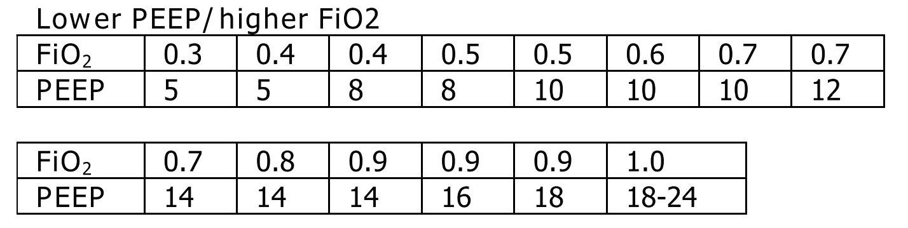

Brigham and Women’s Hospital
COVID-19 Critical Care Clinical Guidelines
Updated: 3/23/2020
This document is a work in progress. We have much to learn.
This is updated daily with evolving information; do not print.
SCCM Guidelines are being reviewed and incorporated but are not yet reflected in this document
Please send suggestions: BWHCOVIDGuidelines@gmail.com
Disclaimer: This document is intended as a resource for clinicians caring for critically-ill COVID-19 patients, based on available evidence and recommendations of governing bodies. The recommendations do not replace clinical judgment or the need for individualized patient care plans. While we attempt to keep this document up-to-date, the literature on COVID-19 is rapidly evolving, and we suggest that practitioners search for the most up-to-date literature on any specific topic. These guidelines will also rapidly evolve as they are implemented into clinical practice and we receive feedback from practitioners. Finally, these guidelines were developed based on practice patterns and infrastructure at Brigham and Women’s Hospital in Boston, MA; local factors should be taken into account if utilized at other hospitals.
COVID-19 one page Quick Guides:
COVID-19 Initial work-up QUICK GUIDE
COVID-19 Respiratory Failure management QUICK GUIDE
COVID-19 ICU care QUICK GUIDE
Table of Contents
COVID-19 one page Quick Guides: 1
Chapter 1: Non-ICU Management, Triage, Transfers 3
Clinical Course of COVID-19 3
Non-ICU Management Principles 4
Chest Imaging and Point of Care Lung Ultrasound 6
Triage to ICU 6
Transfer Process 6
Chapter 2: Respiratory Support for COVID-19 Patients 7
Respiratory Failure and ARDS 7
Management of Hypoxemia 7
Initial Mechanical Ventilation 9
PEEP and Mechanics 10
Targeting Sedation for Ventilator Synchrony 11
General Management of Ventilated ARDS Patients 12
Managing Ventilation 13
Managing Oxygenation 13
Proning and Pulmonary Vasodilators 15
ECMO consultation 16
Chapter 3: COVID-19 Therapies and Clinical Trials 17
Note: 17
Clinical trials 17
Antibiotic stewardship 17
Metered-dose inhalers (MDIs) vs. nebulizers 18
Airway Clearance 19
Inhaled Pulmonary Vasodilators 19
Systemic Corticosteroids 20
Anti-IL6 Agents (Tocilizumab, Siltuximab) 21
Hydroxychloroquine and Chloroquine 22
Angiotensin Converting Enzyme Inhibitors (ACE-I) and Angiotensin II Receptor Blockers (ARB) 23
Non-steroidal anti-inflammatory drugs (NSAIDs) 24
Blood Products 24
Chapter 4: Cardiac Complications of COVID-19 25
Acute Cardiac Injury 25
Cardiovascular Testing 26
Arrhythmias 26
Acute Coronary Syndromes 27
Pericarditis and Myocarditis 28
Chapter 5: Shock: Septic, Cardiogenic, and Cytokine Storm 29
Undifferentiated Shock in COVID 29
Differentiating Shock 30
Septic Shock and Secondary Infections 31
Cardiogenic Shock 33
Cytokine Activation Syndrome 35
Chapter 6: Thrombotic and Coagulation Manifestations 36
Thrombotic Disease 36
Disseminated Intravascular Coagulation (DIC) 37
Chapter 7: Renal Manifestations 38
Acute Kidney Injury 38
Chapter 8: Other Guidance 39
Liver Disease 39
Considerations for Oncology Patients 40
Goals of Care 43
Management of Cardiac Arrest 43
The Role of Palliative Care 44
Ethical Considerations and Resource Allocation 44
REFERENCES 46
ADDENDUM: COVID ICU Bundle Checklist 50
Chapter 1: Non-ICU Management, Triage, Transfers
Clinical Course of COVID-19
- Clinical presentation: non-specific, flu-like illness
- Fever (44-98%)
- Cough (46-82%)
- Shortness of breath (20-64%)
- Upper respiratory symptoms, nasal / sinus congestion (5-25%)
- GI symptoms (10%; usually before respiratory symptoms)
- Transmission:
- Large droplets and fomites
- Viral particles survive < 24h on cardboard, < 72h on plastic or steel (van Dorelmalen et al, New Engl J Med, 2020)
- Aerosols (droplet nuclei, < 5 µm), estimated < 4h
- Incubation period: median 4 days, common range 2-7 days, up to 24 days
- Symptomatic and asymptomatic patients can transmit the virus
- Disease Course:
- ~ 80% do not require critical care
- ~ 10-20% develop bacterial superinfection
- ~ 2-25% have respiratory viral co-infection (Qingdao, China: Xing et al, medRxiv, 2020 preprint; Stanford, CA, USA: Shah N, Medium, 2020 unpublished data)
- ~ 20% develop ARDS
- ~ 5% develop renal injury requiring renal replacement therapy
- Elevated AST / ALT (~200s) is common; fulminant hepatitis not reported
- Cardiomyopathy in critically ill patients; some progress to cardiogenic shock late in course (anecdotal reports)
- Reasons for ICU admission:
- Hypoxemic respiratory failure is the most common indication for ICU.
- Reports of rapid progression to intubation within 12-24h
- Few patients with shock, can develop late in course
- Median time from symptom onset to ICU transfer is ~10 days
- Poor prognostic indicators:
- Demographics: Age > 65, male
- Comorbidities: cardiovascular disease (includes hypertension), pulmonary disease, diabetes, malignancy, immunosuppression
- Lab findings: severe lymphopenia, elevated troponin, elevated creatinine, elevated LDH, elevated CRP, elevated D-dimer
- Cause of death:
- ~53% respiratory failure
- ~33% concomitant respiratory and heart failure
- ~7% cardiac or heart failure alone
- Mortality rate appears to correlate with age and availability of medical resources (Ruan et al, Intensive Care Med, 2020)
Non-ICU Management Principles
- Diagnostic studies:
- Labs & EKG:
- On admission: CBC with differential, BMP, LFTs, LDH, CRP, D-dimer, Troponin / CPK, PTT / INR, Procalcitonin, baseline EKG
- Daily: CBC with differential, BMP
- For stable floor patients, consider every other day
- Every other day: LFTs, LDH, CRP, D-dimer, Troponin / CPK (if in ICU), Triglycerides (if on propofol)
- If clinical worsening: LFTs, LDH, CRP, D-dimer, Troponin, CPK, PTT / INR, Procalcitonin, Ferritin, Fibrinogen, EKG
- Expert opinion does not recommend routine pro-BNP.
- Chest imaging: Portable CXR is sufficient in most cases. Avoid routine daily CXR (unlikely to change management, evaluate case-by-case).
- Chest imaging variable; bilateral patchy opacities most common
- Chest CT often will not change treatment; obtain only if necessary (risk of transmission, time associated with transport / decontamination of equipment)
- Point of Care Ultrasound of the lungs can be used but by experienced providers only
- Obtain additional studies only if necessary
- Avoid routine TTEs (for cardiac studies, see: “Cardiac Complications of COVID” chapter).
- Medical management:
- Further details in “COVID Therapies and Clinical Trials” chapter
- Management is largely supportive
- Fluid management should be conservative due to risk of hypoxia/CHF
- Antiviral and immune-modulating therapies are investigational
- Early Advance Care Planning:
- In conscious patients, review or sign Health Care Proxy form
- Discuss and document goals of care on admission
- Educate patient and family on disease course
- Focus on desired quality of life and tolerance for ICU measures
- Avoid implying availability of ICU measures if unknown (refer to local ethics guidance)
- Avoid increasing risk of transmission: Generally avoid transport if possible.
- Further details in “COVID Therapies and Clinical Trials” chapter
- Non-Invasive Positive Pressure Ventilation (NIPPV: BiPAP, CPAP), High Flow Nasal Cannula (HFNC), Humidified Venturi Face Masks, Nebulizers increase aerosolization.
- Any aerosol-generating intervention must be performed under Strict (Airborne) Isolation Precautions, in a negative pressure room.
- In current policy, patients with severe OSA may continue nocturnal CPAP / BiPAP but must use a BWH NIPPV mask and machine, not their home mask or nasal pillows which have elevated aerosol risk. BWH machines have dual limb (with HEPA filter); in contrast, home machines have a single limb so they have an anti-asphyxiation (pop-off) valve that increases aerosol risk.
- Transition back to home machine if COVID-19 ruled out
- Use metered dose inhalers instead of nebulizers.
- Transition back to nebs if COVID-19 ruled out
- If patient already on BiPAP / CPAP / HFNC becomes COVID-suspected, transition to non-rebreather followed by intubation.
- NIPPV* is not used for ARDS; early intubation is preferred.
*Can be considered on a case-by-case basis for highly reversible indications (e.g., flash pulmonary edema with rapid resolution).
- Similar to many U.S. medical centers, our current default is to avoid HFNC in DNI patients and to use NRB, although exceptions can be considered on a case-by-case basis.
Chest Imaging and Point of Care Lung Ultrasound
- This section is in progress
Triage to ICU
- Consult the ICU triage team EARLY for:
- Provider concern
- Respiratory distress
- Need O2 > 6 LPM to maintain SpO2 > 92 or PaO2 > 65.
- Rapid escalation of oxygen requirement.
- Significant work of breathing.
- Hemodynamic instability after initial conservative fluid resuscitation
- SBP < 90, Mean arterial pressure < 65, or Heart rate > 120.
- Acidosis
- ABG with pH < 7.3 or PCO2 > 50 or above patient’s baseline.
- Lactate > 2.
- Need for intensive nursing care or frequent laboratory draws requiring arterial line.
- Severe comorbid illness / high risk for deterioration.
Transfer Process
- Additional details in Strict Isolation Procedures Manual.
- Floor / ED to ICU:
- ICU RN brings ICU bed to the floor for transfer (to avoid bed transfer in COVID precautions room and subsequent bed cleaning).
- Patient wears surgical mask, with an extra clean gown and sheet on top.
- Providers wear standard PPE during transport.
- Security facilitates the shortest and fastest transfer route, walks 6 ft away from patient and providers, not required to wear PPE
- Necessary tests (e.g. CT), should be obtained during transfer if possible.
- ICU to floor:
- RN wears standard PPE
- Patient travels in wheelchair or stretcher
- Security facilitates the shortest and fastest transfer route, walks 6 ft away from patient and providers, not required to wear PPE
- Floor to discharge: see separate documentation of discharge criteria/planning
- RN wears standard PPE
- Patient travels in wheelchair
- Security facilitates the shortest and fastest transfer route, walks 6 ft away from patient and providers, not required to wear PPE
- Patient is escorted directly into vehicle; contact care management if patient does not have access to a personal vehicle
Chapter 2: Respiratory Support for COVID-19 Patients
Respiratory Failure and ARDS
- Pathophysiology:
- Histology shows bilateral diffuse alveolar damage with cellular fibromyxoid exudates, desquamation of pneumocytes, pulmonary edema, and hyaline membrane formation (Xu et al, Lancet Respir Med, 2020)
- Some evidence of direct viral injury to lung tissue, rather than purely hyperinflammatory process (Xu et al, Lancet Respir Med, 2020)
- Time course:
- Anecdotal reports that progression of hypoxemic respiratory failure occurs rapidly (within ~12-24 hours)
- From onset of symptoms, median time to:
- Development of ARDS: 8-12 days (Wang et al, JAMA, 2020; Zhou et al, Lancet, 2020; Huang et al, Lancet, 2020)
- Mechanical ventilation: 10.5-14.5 days (Huang et al, Lancet, 2020; Zhou et al, Lancet, 2020)
Management of Hypoxemia
- Supplemental Oxygen:
- Humidified nasal cannula (NC) 1 to 8 LPM for target SpO2 92-96%
- If a patient requires > 8 LPM NC, initiate dry Venturi mask (non-humidified to reduce aerosolization risk)
- Start Venturi mask at 9 LPM and FiO2 28%
- Up-titrate FiO2 to goal SpO2 of 92-96% (not exceeding FiO2 35%)
- If FiO2 > 35% then increase flow to 12 LPM
- Notify ICU triage pager
- Avoid high-flow nasal cannula (HFNC) and non-invasive positive pressure ventilation (NIPPV; i.e. CPAP/BiPAP) for ARDS.
- Patients on nocturnal NIPPV at home should continue their nocturnal NIPPV. However, patient must use BWH NIPPV mask and machine (not home mask/nasal pillow or machine due to increased aerosol risk with home pillows/mask/machine) under strict airborne precautions.
- If a patient already on HFNC or NIPPV becomes a COVID-19 PUI, transition to non-rebreather if safe
- Recommend that the patient be off an aerosol generating device like HFNC or NIPPV for 45 minutes prior to intubation if clinically feasible
- If a patient is DNR/DNI or otherwise is not eligible for intubation:
- Current policy advises avoiding HFNC or NIPPV in DNI/DNR patients. However, neither HFNC nor NIPPV is prohibited and case-by-case exceptions could apply.
- This is an evolving area without definitive evidence or uniform policy that underwent multi-disciplinary discussion.
- Considerations include:
- Safety of staff (particularly respiratory therapy and nursing);
- Paucity of data on the increased aerosol risk;
- WHO interim guidance (published March 13, 2020) on COVID-19 are more liberal about the usage of HFNC and NIPPV, stating that systems with “good interface fitting [i.e., good seal, no air leak] do not create widespread dispersion of exhaled air and therefore should be associated with low risk of airborne transmission.”[a]
- Difficulty in assessing how many patients failing NRB would survive on HFNC.
- Pro-active treatment of air hunger through other means.
- HFNC has been utilized in lieu of ventilation of both full code and DNI/DNR patients in the setting of limited resources.
If HFNC or NIPPV used
- For HFNC, recommend patient wear surgical mask and limit flow rate to < 30 L/min
- For BiPAP, use an in-line viral filter.
- Ensure masks/devices fit well and there is minimal air leak (as leaks propel potentially infected air significant distances - see “Rationale” below)
- Rationale: General consensus suggests that HFNC and NIPPV increase the risk of viral transmission. Given the rapid progression of disease, we do not expect many patients can be salvaged/avoid intubation using HFNC/NIPPV, but this is unknown
- A systematic review on SARS found that NIPPV was associated with increased risk of viral transmission to healthcare workers (n=2 studies), but HFNC was not (n=1) (Tran et al, PLoS One, 2012)
- Other studies with very limited power exist, such as a post-hoc analysis that found no secondary infections in medical staff from patients with influenza H1N1 treated with HFNC but was limited to only n=20 (Rello et al, J Crit Care, 2012[b]);
- Exhaled air distances are minimally increased with CPAP pressures up to 20 cm H2O and HFNC up to 60 LPM; device/interface leaks cause significant lateral air travel (Hui et al, Eur Respir J, 2019)
- Early intubation:
- We recommend early consultation with anesthesia for possible intubation in the setting of rapidly progressive hypoxia.
- Case reports from China suggest high failure rates for non-invasive ventilation, including high-flow nasal oxygen (Zuo et al, Chin Med Sci J, 2020)
- For patients maintained on Venturi mask, once FiO2 = 60% and SpO2 < 92%, call for intubation if patient is a candidate for mechanical ventilation
- There is a COVID Airway Code Team with specific protocols for avoiding aerosolization.
- Many centers suggest Rapid Sequence Intubation when fully paralyzed, without ambu-bag (which generates aerosols) and highly experienced operators (e.g., anesthesia attending).
- Consider additional indications for intubation (tachypnea, work of breathing).
Initial Mechanical Ventilation
- Intubations outside of ICU:
- Should be attended by the Resource RT, who can facilitate early and appropriate ventilator settings with non-intensivists.
- Use “Mechanical Ventilation with Sedation” orderset.
- Initiate Volume Control (AC/VC) mode
- Initial tidal volume (Vt):
- Vt = 6 ml/kg (based on ideal body weight [IBW] from ARDSnet table, see table below)
- IBW men (kg) = 50 + 2.3 (height in inches – 60)
- IBW women (kg) = 45.5 + 2.3 (height in inches – 60)

- Initial respiratory rate 16-24, higher if acidosis present.
- Initial PEEP based on BMI:
- BMI < 35: PEEP 10
- BMI 35 to 50: PEEP 12
- BMI > 50: PEEP 15
- Initial FiO2:
- 100% on intubation then rapidly wean to SpO2 92-96% (Barrot et al, N Engl J Med, 2020)
- Obtain STAT portable CXR to confirm endotracheal tube location:
- Order and page radiology at time of intubation
- Prioritize CXR and vent titration over procedures (such as central venous catheter placement) if possible.
- Within 30 minutes of intubation, obtain an ABG (preferred) or a VBG and adjust ventilation and oxygenation as needed
PEEP and Mechanics
- If patients supported by Hamilton G5 Ventilator (most common), perform the following within 10 minutes of intubation:
- Determine best PEEP following intubation while paralyzed using Pressure-Volume (PV) tool
- This is a departure from use of Best PEEP Trials. PV tool is the preferred method due to widespread familiarity with RT staff, institutional experience, time constraints, and minimizing provider exposure
- Recommend maintaining this PEEP for initial care unless titration is required based on clinical parameters (e.g., hypoxia, elevated Ppl, etc)
- If PEEP titration is required based on change in clinical status, recommend using PV tool to assess new PEEP. If this is not possible (no knowledgeable user available or patient inadequately sedated) then recommend PEEP titration by the Lower PEEP ARDSnet table (see below)
- If patients not supported by Hamilton G5 Ventilator, perform the following within 10 minutes of intubation:
- Initiate PEEP based on BMI
- If there are changes in clinical parameters (e.g., hypoxia), titrate PEEP according to ARDSnet Lower PEEP table (below).
- Current recommendations are to use ARDSnet Lower PEEP table. This table is selected primarily to avoid doing initial harm to patients with poor lung compliance and was chosen following joint MGH and BWH discussion.
- After best PEEP determined, obtain respiratory mechanics:
- Plateau pressure (with goal < 30, management below)
- Static compliance
- Obtain arterial blood gas:
- Goal pH 7.25 to 7.45
- Calculate P/F ratio from initial post-intubation ABG
- Routine esophageal balloon use is not recommended
Targeting Sedation for Ventilator Synchrony
- Initially target RASS -2 to -3 (see table below):
- Maintain deep sedation immediately post-intubation while paralyzed (assume 60 minutes for Rocuronium, 10 minutes for succinylcholine)
- Preferred initial sedation regimen:
- Fentanyl/Hydromorphone (boluses +/- infusion) + Propofol: target analgosedation and optimize analgesia first while decreasing sedative requirements
- Measure triglycerides and lipase every third day on propofol or earlier if other reasons for hypertriglyceridemia
- Adjunct agent: Midazolam
- Use dexmedetomidine only when nearing extubation
- Target ventilator synchrony: Ventilator-induced lung injury (VILI) is common in patients who are not synchronous with the ventilator and can cause significant lasting damage
- Once at target RASS after paralytics have worn off, assess patient synchrony with the ventilator (e.g., signs of breath-stacking, double triggering, other ventilator alarms).
- Titrate sedatives/analgesics to ventilator synchrony allowing for deeper RASS.
- If patient remains dyssynchronous despite deep sedation (RASS -5), initiate continuous paralytics (ensure BIS 40 to 60 prior to initiating and during paralysis).

General Management of Ventilated ARDS Patients
- Consider whether patient requires daily CXR:
- CXR clearly indicated for:
- Clinical change
- Concern for displaced ET tube:
- Sudden increase in peak inspiratory pressure or resistance
- Decreased, unilateral breath sounds (usually on the right)
- RN or RT concern for change in depth of ET tube at teeth
- COVID-19 ICU Bundle:
- Ventilated patients should all have a daily ICU “Bundle” of best practices. See Addendum 1 for a proposed “COVID-19 ICU Bundle”.
- Ventilator consults:
- If you need additional assistance managing ventilator choices, you can request a pulmonary phone/in-person consult (pager 11957).
Managing Ventilation
- Follow ARDSnet ventilation where possible:
- Tidal volumes should be 4-6 cc/kg using IBW (see table above) to minimize volumes (and thus ventilator injury).
- Minute ventilation (respiratory rate x tidal volume) typically drives pH and PCO2:
- Titrate ventilatory parameters to pH, not PCO2.
- To achieve low tidal volumes, we tolerate hypercapnia (functionally no limitation unless clinical sequelae) and acidemia (pH > 7.2).
- Because tidal volumes are low, the respiratory rate often has to be high to accommodate; typical RR is 20-35 breaths/minute.
- pH goal is normally 7.25-7.45:
- If pH > 7.45, decrease respiratory rate
- If pH 7.15-7.30, then increase respiratory rate until pH > 7.30, or PaCO2 < 25 (maximum RR= 35 breaths/minute)
- If pH < 7.15, then increase respiratory rate to 35 breaths/minute
- If pH still < 7.15, then perform the following:
- Tidal volume may be increased by 1 mL/kg until pH > 7.15 (until plateau pressure reaches 30 cm H2O or tidal volume reaches 8 cc/kg)
- Deep sedation advancing to RASS -5 if needed
- If no improvement, initiate continuous paralysis
- If still no improvement, initiate prone ventilation (may improve V/Q matching and better ventilation)
Managing Oxygenation
- Minimizing oxygen toxicity:
- PEEP and Fi02 drive oxygenation
- The goal is to deliver a partial pressure of oxygen to perfuse tissues (PaO2 > 75, Sp02 >92%) while limiting lung injury from high distending pressures (Ppl < 30) and hyperoxia (FiO2 < 75, SpO2 < 96%).
- Lower limit goals for PaO2 / SpO2 are widely debated (and discussed in Rationale); PaO2 > 55 and SpO2 >88% are also commonly used at BWH.
- PEEP management:
- Initial PEEP should be set as explained in section 4 above.
- If patient is hypoxic on Vt = 6 ml/kg and ideal PEEP from PV tool (or PEEP determination from ARDSnet table for non-Hamilton G5 ventilators), perform the following:
- Deep sedation, advancing to RASS -5 if needed; if no improvement then:
- Initiate continuous paralysis (cisatracurium bolus 0.2mg/kg followed by infusion at 0-5 mcg/kg/min titrated to patient-ventilator synchrony); if no improvement then:
- Initiate prone ventilation (see below); high consideration for use early in severe ARDS (<36 hours from ARDS onset, start discussion of proning when P:F < 150, prone within 12 hours of FiO2 > 75%)
- Checking plateau pressure:
- Check plateau pressure with every change in tidal volume, PEEP, or clinical deterioration (worsening oxygenation) but not as part of routine practice
- If plateau pressure is > 30 cm H20, then decrease tidal volume by 1 ml/kg (minimum 4 mL/kg)
- If plateau pressure is < 25 H20 and tidal volume < 6 mL/kg, then increase tidal volume by 1 mL/kg until plateau pressure is > 25 cm H2O or tidal volume = 6 mL/kg
- If plateau pressure is < 30 cm H20 and patient is breath stacking or dyssynchronous, then increase tidal volume in mL/kg increments to 7 mL/kg or 8 mL/kg so long as plateau pressure is < 30 cm H20
- Adjusting Fi02:
- Adjust Fi02 after optimizing PEEP
- Goal FiO2 < 75%; if FiO2 > 75%; patient requires ventilator optimization. If you need assistance, pulmonary consultation is available (pager 11957)
- It is reasonable to put a desaturating patient temporarily on 100% Fi02, but remember to wean oxygen as rapidly as possible
- Rationale:
- Avoiding hyperoxia: Extensive mammalian animal data demonstrates that hyperoxic injury occurs at an FiO2 ≥ 75% (at sea level) with the rate of injury increasing as FiO2 exceeds that threshold. In multiple mammalian models, an FiO2 of 100% for 48 to 72 hours is associated with nearly 100% mortality rate. In lung injury models, the time to death is markedly attenuated. In an effort to reduce the potential for hyperoxic injury, the threshold of FiO2 ≥ 75% triggers progressive intervention throughout this protocol: increased sedation, paralysis, proning and ECMO consultation. For a review of hyperoxic acute lung injury, see Kallet and Matthay, Respir Care, 2013.
- Setting the lower oxygen limits: There is debate on the proper PaO2 goal, and our rationale relies on evidence for lack of benefit from conservative PaO2 goals in clinical trials (i.e., PaO2 > 55) and past association between lower PaO2 and cognitive impairment, although the evidence is certainly not definitive (mean PaO2 71 [IQR 67-80] for cognitively impaired survivors versus mean PaO2 86 [IQR, 70-98] in non-impaired survivors of ARDS (Mikkelsen et al, Am J Respir Crit Care Med, 2012[c]). In the LOCO2 multi-center, randomized clinical trial, patients with ARDS were randomized to their PaO2 55-70, SpO2 88-92%; or PaO2 90-105, SpO2 >95%); the trial was stopped after enrollment of 205 patients due to futility and safety concerns (44% mortality in conservative oxygen group versus 30%; (Barrot et al, New Eng J Med, 2020[d]).
Proning and Pulmonary Vasodilators
- Prone early:
- We recommend early proning in severe ARDS without vasodilator trial (a departure from our typical practice for ARDS not due to COVID-19): < 36 hours from ARDS onset, start discussion of prone when P:F < 150, prone within 12 hours of FiO2 > 75% (Guérin et al, N Engl J Med, 2013).
- Eligibility criteria for proning:
- Eligibility may vary depending on resources and staffing. Currently we recommend:
- Age < 75
- No high grade shock (either single agent norepinephrine 20 mcg/min or norepinephrine < 15 mcg/min and vasopressin)
- Not on CRRT or at risk of impending renal failure (due to difficulties in maintaining dialysis access while proned)
- The only absolute contraindications to proned ventilation are spinal cord injury and open chest; BMI and patient size are not contraindications
- To initiate prone ventilation outside of MICU and 11C:
- Discuss with the PCCM Consultation team assigned to that unit
- ICU charge nurse to contact MICU charge nurse for nursing assistance
- Managing a proned patient:
- Proning protocol is available at the MICU sharepoint
- Maintain deep sedation with target RASS -4 to -5 while proned.
- 1 hour post-initiation of prone ventilation:
- Adjust oxygen parameters: re-assess lung mechanics (plateau pressure and P-V tool to determine optimal PEEP) and adjust PEEP and titrate FiO2 as in “Managing Ventilation” section of this chapter.
- Assess tidal volume and adjust ventilation parameters as in section 6
- If Vt < 6 ml/kg, may increase to maximum limit of 8 ml/kg while Ppl < 30 (preferred maximum is 6 ml/kg)
- If patient demonstrates improvement on proning then recommend:
- Discontinuing of continuous neuromuscular blockade and re-assess ventilator dyssynchrony; re-institute if dyssynchronous
- Return to supine ventilation when following criteria are met:
- Ppl < 25
- FiO2 < 50%
- pH > 7.3
- P:F > 200
- Repositioning and skin care while proned:
- Currently we recommend continuing proning as per the MICU proning protocol. This may change in the future depending on availability of PPE and staffing.
- Escalation if still hypoxic:
- If hypoxia (PaO2 < 55 with FiO2 > 75%) persists after proning; then initiate continuous inhaled epoprostenol (see “COVID-19 Therapies and Clinical Trials” chapter).
- If FiO2 > 75% despite above, recommend consultation with ECMO team (see “ECMO consultation” section of this chapter).
ECMO consultation
- Refractory Hypoxemia:
- If despite PEEP optimization, paralysis, prone ventilation, optimizing volume status, pulmonary vasodilators (when available) the patient meets the following criteria, then consider ECMO consult (pager 35010):
- Ppl > 30
- FiO2 > 75%
- P:F < 80
- Candidacy:
- Final ECMO guidelines for COVID-19 patients remain under development[e]. Examples of common considerations include:
- Patient age < 65
- Mechanical ventilation duration < 7 days
- BMI < 35 and patient body weight < 150 kg
- CrCl > 30
- No multiorgan failure or high grade shock (can be on single pressor; norepinephrine < 15 mcg/min)
- No active solid or liquid malignancy
- Absolute neutrophil count > 500
- Platelets > 50,000
- Able to tolerate anticoagulation on initiation (no active hemorrhage)
- No evidence of irreversible neurological injury
- Able to perform ADLs at baseline prior to illness
Chapter 3: COVID-19 Therapies and Clinical Trials
[f]
Note:
- The anti-viral and anti-inflammatory section below written by our critical care group is meant to provide a summary of the literature. This section does not represent the views or recommendations of the BWH Division of Infectious Disease. The separate BWH Infectious Disease guidelines and ID consultation service take precedence over the information from the literature below.
Clinical trials
- Consult Infectious Disease for:
- Patients with +COVID-19 PCR; and clinical history and any chest imaging suspicious for COVID-19.
- Re-consult if the patient develops ARDS (mechanically ventilated with P/F ratio < 300) or shock/cytokine syndrome.
- Current trials:
- ID teams are enrolling for clinical trials of Remdesivir and possibly other antiviral agents.
- ID and the PETAL network are coordinating to enroll for clinical trials of host-response modifying therapies (see “Systemic Corticosteroids” and “Anti-IL6 agents” sections of this chapter).
- Monitor for drug-drug interactions:
- Patients may arrive at the ICU already enrolled in a COVID-19 clinical trial. Verify that ICU treatment regimen does not add harmful drug interactions with study agents.
Antibiotic stewardship
- Antibiotic choice:
- Antibiotics should reflect IDSA guidelines, presumed source, and MDRO risk. For a presumed pulmonary source:
- Without risk factors for MRSA or Pseudomonas (i.e. living in community, no prior MDROs):
- Ceftriaxone + Azithromycin
- With risk factors for MRSA or Pseudomonas (i.e. chronic hospitalization, prior MDR infections):
- Vancomycin + Cefepime, and consider Ciprofloxacin if high concern for Pseudomonas
- See special dispensations for oncology patients in “Considerations for Oncology Patients” section within “Other Guidance” chapter.
- Formulation:
- Give oral antibiotics (Azithromycin, Levofloxacin, Ciprofloxacin) when possible to reduce volume load, unless concerns for poor oral absorption
- Coinfection:
- If concurrent influenza give Oseltamivir
- Given lymphopenia consider Pneumocystis and treat accordingly
- Discontinuation:
- Antibiotics should be discontinued as soon as possible (within 48h) if:
- Clinical status is not deteriorating, cultures do not reveal pathogens at 48h, and procalcitonin and WBC are relatively stable from 0 to 48h
- Clinical judgement should prevail over any specific lab value
- Rationale: Clinical reports indicate that rates of bacterial superinfection of COVID19 are low (10-20%), but when present increase mortality risk. Anecdotal reports suggest less MRSA superinfection than with influenza. Unnecessary antibiotics carry risks of fluid overload and drug-resistance, as well as the possibility that antibiotics may become a limited resource. (Zhou et al, Lancet, 2020; Yang et al, Lancet Respir Med, 2020; Lippi and Plebani, Clinica Chimica Acta, 2020; WHO, COVID-19 Interim guidance, March 2020)
Metered-dose inhalers (MDIs) vs. nebulizers
- Non-intubated patients:
- For COVID-19 Confirmed or PUI, use MDI (inhalers), not nebulizers, due to the increased aerosol risk.
- Because MDI supply is limited, only prescribe when needed.
- For non-COVID-19 Confirmed or PUI patient, use nebulizers even if on droplet precautions (e.g., influenza) because MDI supply is limited.
- After a patient is COVID-neg (and no longer on COVID precautions per infection control): After the patient’s current MDI runs out, switch to neb.
- Intubated patients:
- The ventilator circuit is a closed system so nebulizers can be used when required (e.g., DuoNeb standing and albuterol PRN).
- Rationale: Nebulization may aerosolize viral particles and contribute to disease transmission. COVID-19 clinical reports do not indicate wheeze as a common symptom, and not all patients require bronchodilators (Zhou et al, Lancet, 2020; Yang et al, Lancet Repir Med, 2020; Guan et al, N Engl J Med, 2020; WHO, COVID-19 Interim guidance, March 2020)
Airway Clearance
- Management principles:
- Reports from Wuhan and Italy indicate that some patients develop very thick secretions causing dangerous mucus plugging. However, nebulizers and airway clearance techniques may aerosolize secretions
- Airway clearance should be used only in selected ventilated patients (closed circuit) with extremely thick secretions to avoid mucus plugging that would require bronchoscopy
- For thinning secretions:
- Anecdotal reports suggest Dornase alfa may be particularly effective in thinning secretions in COVID-19 patients. However, data for Dornase alfa in non-CF patients is poor. For now we recommend:[g][h]
- Consideration of Dornase alfa 2.5mg nebulizer once daily
- Can cause bronchoconstriction and mucosal bleeding
- Pre-treat with albuterol 2.5mg, just prior to delivery
- Avoid in setting of bloody secretions
- Alternative: Nebulized hypertonic (3-7%) saline once daily
- Side effects can include bronchoconstriction
- Start with 3% to assess response and bronchoconstriction
- Pre-treat with albuterol 2.5mg just prior to delivery
- Avoid N-acetylcysteine due to frequent dosing requirements
- Airway clearance:
- Continue chest PT vests if patient uses at home (e.g., CF patients) with appropriate isolation precautions. Bronchiectasis patients may be considered on a case-by-case basis.
- Avoid oscillating positive expiratory pressure devices (Aerobika or Acapella) and cough assist (MIE).
Inhaled Pulmonary Vasodilators
- Indications for use:
- Inhaled vasodilators should not be routinely used except in two circumstances
- As a rescue strategy in already prone ventilated patients (see “Respiratory Support for COVID-19 Patients” chapter).
- There is no evidence of survival benefit of inhaled vasodilators in ARDS, and there are risks of viral aerosolization when connecting the device (Fuller et al, Chest, 2015; Gebistorf et al, Cochrane Database Syst Rev, 2016; Afshari et al, Cochrane Database Syst Rev, 2017)
- To reduce RV afterload in hemodynamically significant RV failure in consultation with cardiology
- Instructions for use:
- If inhaled vasodilators are used, they should reevaluated at 4 hours
- Inhaled Epoprostenol:
- Start continuous nebulization at 0.05mcg/kg/min based on IBW
- If no improvement in P/F ratio in 2 hours, wean off by decreasing 0.01mcg/kg/min every hour
- Inhaled Nitric Oxide (iNO):
- Strong consideration in refractory ARDS that does not respond to inhaled epoprostenol.
- Limited in vitro data notes that iNO at high doses inhibits replication of SARS-CoV, but this has not been studied in vivo. (Akerstrom et al, J Virol, 2005; Gebistorf et al, Cochrane Database Syst Rev, 2016)
- iNO may be included in future trial protocols, such as early initiation in milder disease (non-intubated).
Systemic Corticosteroids
- Data on corticosteroids for COVID-19:
- Most studies show negative effects of corticosteroids on similar viruses
- There is no clinical evidence of net benefit from steroids in SARS-CoV, MERS-CoV or influenza infection, and observational data show increased mortality, more secondary infections, impaired viral clearance and more adverse effects in survivors (e.g., psychosis, diabetes, avascular necrosis) (Lee et al, J Clin Virol, 2004; Stockman et al, PLoS Med, 2006; Arabi et al, Am J Respir Crit Care Med, 2018; WHO, COVID-19 Interim guidance, March 2020; Wu et al, JAMA Int Med, 2020).
- However, a new retrospective cohort (201 patients, 84 [42%] of whom developed ARDS) demonstrated that among patients with ARDS, methylprednisolone decreased risk of death (HR, 0.38; 95% CI, 0.20-0.72) (Wu et al, JAMA Int Med, 2020).
- Recommendation:
- We recommend against using steroids for COVID-19 except as part of a clinical trial
- This is in line with WHO guidance (WHO, COVID-19 Interim guidance, March 2020).
- Use corticosteroids if required for other indications:
- Use the lowest dose for the shortest duration:
- Asthma or COPD exacerbation
- 40mg prednisone PO or 30mg methylprednisolone IV, once daily x 3-5 days
- Shock with history of chronic steroid use > 10mg prednisone daily:
- 50mg hydrocortisone IV Q6H until improvement in shock
- Multipressor shock without history of chronic steroid use
- 50mg hydrocortisone IV Q6H until improvement in shock
Anti-IL6 Agents (Tocilizumab, Siltuximab)
- Pathophysiology:
- IL-6 activates T cells and macrophages, among other cell types (see “Cytokine Activation Syndrome” section in “Shock” chapter).
- IL-6 inhibitors are approved for cytokine activation syndrome complications related to Chimeric Antigen Receptor T cell (CAR-T) therapy (Brudno and Kochenderfer, Blood Rev, 2019; Rubin et al, Brain, 2019).
- IL-6 levels are reported to correlate with severe COVID-19
- While patients have peripheral lymphopenia, BAL fluid is often lymphocytic, suggesting that IL-6 inhibition and prevention of T cell activation may be protective.
- Recommendation:
- We do not recommend routine use at this time
- There are anecdotal reports of benefit of tocilizumab in COVID-19 patients but no rigorous studies are available (Anecdotal reports from Italy[i]; National Health Commission & State Administration of Traditional Chinese Medicine, Diagnosis and Treatment Protocol for Novel Coronavirus Pneumonia [Trial Version 7], March 2020[j])
- For severe cytokine activation syndrome cases (see “Other Guidance” chapter):
- Consult Infectious Disease team for enrollment in a clinical trial based on CRP and IL-6 levels.[k]
- Exercise caution if secondary infection is clinically suspected, including sepsis, pneumocystis or bacterial pneumonia.
- Dosing regimens:
- Tocilizumab 4-8mg/kg (suggested dose 400mg) IV x1 (anti-IL6R mAb)
- Dose can be repeated 12h later if inadequate response to the first dose. Total dose should be no more than 800mg. Tocilizumab should not be administered more than twice.
- Common adverse effects include:
- Transaminitis (AST, ALT) > 22%
- Infusion reaction 4-20%
- Hypercholesterolemia 20%
- Upper respiratory tract infection 7%
- Neutropenia 2-7%
- Alternative: Siltuximab 11mg/kg IV x1 (anti-IL6 mAb)
- Common adverse effects include:
- Edema >26%
- Upper respiratory infection >26%
- Pruritus / skin rash 28%
- Hyperuricemia 11%
- Lower respiratory tract infection 8%
- Thrombocytopenia 8%
- Hypotension 4%
Hydroxychloroquine and Chloroquine
- Pathophysiology:
- Hydroxychloroquine (HQ) is an anti-malarial 4-aminoquinoline shown to have in vitro (but not yet in-vivo) activity against diverse RNA viruses including SARS-CoV-1 (Touret and de Lamballerie, Antivir Res, 2020).
- HQ is thought to act through multiple mechanisms (Devaux et al, Int J Antimicrob Agent, 2020):
- Inhibition of viral entry. HQ inhibits synthesis of sialic acids and interferes with protein glycosylation, which may disrupt interactions necessary for viral attachment and entry (Vincent et al, Virol J, 2005; Olofsson et al, Lancet Infect Dis, 2005).
- Inhibition of viral release into the host cell. HQ blocks endosomal acidification, which activates endosomal proteases. These proteases are required to initiate coronavirus/endosome fusion that releases viral particles into the cell (Yang et al, J Virol 2004).
- Reduction of viral infectivity. HQ has been shown to inhibit protein glycosylation and proteolytic maturation of viral proteins. Studies on other RNA viruses have shown a resulting accumulation of non-infective viral particles, or an inability of viral particles to bud out of the host cell (Savarino et al, J Acquir Immune Defic Syndr, [l][m]2004;[n][o] Klumperman et al, J Virol, 1994).
- Immune modulation. HQ reduces toll-like receptors and cGAS-STING signaling. It has been shown to reduce release of a number of pro-inflammatory cytokines from several immune cell types (Schrezenmeier and Dorner, Nat Rev Rheum, 2020).
- Data:
- An expert consensus group out of China suggests that Chloroquine improved lung imaging and shortened disease course (Zhonghua et al, CMAPH, 2020). Chloroquine will be included in the next treatment guidelines from the National Health Commission, but the specific data on which this is based is not available yet (Gao et al, Biosci Trends, 2020).
- Hydroxychloroquine was found to be more potent than chloroquine in inhibiting SARS-CoV-2 in vitro (Yao et al, Clin Infect Dis, 2020)
- Recommendation:
- Strong consideration of hydroxychloroquine in patients who require supplemental oxygen who are not candidates for other clinical trials.[p]
- Dosing (from published literature):
- Hydroxychloroquine:
- 400mg PO BID on the first day, followed by 200mg q12 (q8h if concerns for absorption) for 5-10 days
- Chloroquine (not available at BWH):
- Second line agent (increased toxicity compared to Hydroxychloroquine)
- 500mg Chloroquine phosphate 500mg PO BID for 10 days[q]
- Common adverse reactions include:
- Prolonged QT interval and risk of Torsade de pointes
- Cardiomyopathy
- Bone marrow suppression
- Contraindicated in epilepsy and porphyria
- Monitoring
- If hydroxychloroquine is being administered with azithromycin, there should be vigilant QTc monitoring:
- Obtain baseline ECG and daily ECG
- Discontinue all other QT prolonging agents
- Maintain continuous telemetry while under treatment
- Do not start if QTc >500 or 550 with pacing or BBB.
- Discontinue if there is an increase in PVCs or non-sustained PMVT.
- There is a reported risk of hydroxychloroquine induced cardiomyopathy. Case series and reports have found this to be a long-term (years) and dose-dependent phenomenon. Given the anticipated short duration in COVID-19, it is not an expected risk (Nord et al, Semin Arthritis Rheum, 2004). [r]
Angiotensin Converting Enzyme Inhibitors (ACE-I) and Angiotensin II Receptor Blockers (ARB)
- Pathophysiology:
- SARS-CoV-2, the virus that causes COVID-19, enters the same cell entry receptor as SARS-CoV: angiotensin converting enzyme II (ACE2) (Paules et al, JAMA, 2020). SARS-CoV-2 is thought to have a higher affinity to ACE2 than SARS-CoV.
- ACE2 is expressed in the heart, lungs, vasculature, and kidneys. ACEi and ARBs in animal models increase the expression of ACE2 (Zheng et al, Nat Rev Cardiol, 2020), though this has not been confirmed in human studies. This has led to the hypothesis that ACE-I and ARBs, might worsen myocarditis or precipitate ACS.
- It has also been hypothesized that the upregulation of ACE2 is therapeutic in COVID-19 and that ARBs might be protective in during infection (Gurwitz D, Drug Dev Res, 2020).[s]
- Recommendation:
- For outpatients:
- We recommend against discontinuing outpatient ACEi/ARBs.
- For inpatients:
- We recommend against routine discontinuation of ACEi/ARBs, unless otherwise indicated (e.g., acute kidney injury, hypotension, shock, etc).
- Rationale
- The American College of Cardiology, American Heart Association and Heart Failure Society of America joint statement recommends against discontinuing ACE-I and ARBs in patients with COVID-19 (Bozkurt et al, HFSA/ACC/AHA Statement Addresses Concerns Re: Using RAAS Antagonists in COVID-19, 2020). This remains an area of investigation and it is unclear how these medications affect patients with COVID-19.
Non-steroidal anti-inflammatory drugs (NSAIDs)
- Pathophysiology:
- SARS-CoV-2 binds to cells via ACE2. ACE2 is upregulated by ibuprofen in animal models, and this might contribute (see “Angiotensin Converting Enzyme Inhibitors (ACE-I) and Angiotensin II Receptor Blockers (ARB)” section of this chapter).
- Recommendation:
- Consider acetaminophen instead of NSAIDs if possible; risk / benefit should be discussed with patients and treatment team.
- Reports from France indicate possible increase in mortality with ibuprofen in COVID-19 infection, but these reports have not been corroborated (Fang et al, Lancet Respir Med, 2020; Day M, BMJ, 2020).
- WHO clarified on 3/20/20 it does not recommend avoiding NSAIDs as of 3/18/20 (WHO, COVID-19 Interim guidance, March 2020).
Blood Products
- Recommendation:
- Restrictive transfusion strategy (Hct > 21, Hgb > 7) is recommended unless the patient is actively bleeding or there is concern for acute coronary syndrome.
- Parsimony is encouraged given limited supplies (blood drives are limited by social distancing)
- Acute coronary syndrome: Hgb > 10
- Oncology patients: if possible, reduce threshold to Hgb >7
- All others: Hgb > 7
- Massive transfusion protocol, as a very limited resource, will need to be activated only by the ICU attending
- Other blood products:
- Treat bleeding not numbers
- FFP or 4 factor-PCC (lower volume) for active bleeding in setting of known or suspected coagulation abnormalities
- Warfarin reversal: use 4 factor-PCC given longer effect and lower volume
- Platelets: goal > 30K unless actively bleeding
- Rationale: Volume overload is of particular concern in patients with COVID-19 so transfusions may be harmful. Randomized controlled trials of ICU patients have shown that a conservative transfusion strategy (Hgb > 7) is associated with less pulmonary edema, fewer cardiac events, fewer transfusions (likely fewer transfusion reactions) and no evidence of harm compared to a liberal transfusion strategy. (Hébert et al, N Engl J Med, 1999; Holst et al, N Engl J Med, 2014; Gajic et al, Crit Care Med, 2006).
Chapter 4: Cardiac Complications of COVID-19
Acute Cardiac Injury
- Definition:
- Defined in studies as troponin > 99th percentile, or abnormal EKG or echocardiographic findings (Zhou et al, Lancet, 2020). Non-specific.
- Incidence:
- Incidence of 7-22% in hospitalized patients with COVID-19 in China (Ruan et al, Intensive Care Med, 2020; Wang et al, JAMA, 2020; Chen et al, Lancet, 2020).
- Prognostic implications:
- ACI is higher in non-survivors (59%, n=32) than survivors (1%, n=1) (Zhou et al, Lancet, 2020).
- ACI is higher in ICU patients (22%, n=22) compared to non-ICU patients (2%, n=2) (Wang et al, JAMA, 2020)
- Time course:
- Troponin rise and acute cardiac injury tend to be late manifestations.
- Troponin increased rapidly from ~14 days from illness onset, after the onset of respiratory failure (Zhou et al, Lancet, 2020). [t][u][v][w]
- Among non-survivors, a steady rise in troponin I levels was observed throughout the disease course from day 4 of illness through day 22 (Zhou et al, Lancet, 2020).
- Mechanism:
- The mechanism is unknown, though several have been proposed, based on very limited data outside of case series and reports (Ruan et al, Intensive Care Med, 2020; Hu et al, Eur Heart J, 2020; Zeng et al, Preprints, 2020)
- Possible direct toxicity through viral invasion into cardiac myocytes (i.e., myocarditis)
- Acute coronary syndrome and demand ischemia
- Stress or cytokine-mediated cardiomyopathy (i.e., Takotsubo’s)
Cardiovascular Testing
- Troponin:
- ICU patients: Check hsTrop daily and SCvO2 daily
- Inpatients: Check hsTrop every other day
- If hsTrop > 200 ng/L
- Obtain 12-lead ECG
- Perform point-of-care US (POCUS) if you are trained to do so
- If no new ECG or echocardiographic abnormalities, continue to monitor every other day hsTrop
- Telemetry:
- Telemetry should be used for all critically-ill patients
- At BWH, COVID-19 floor patients also have telemetry.
- For hospitals, with resource-limitations, telemetry is most important for patients who meet AHA criteria (Sandau et al, Circulation, 2017).
- ECGs:
- Daily ECGs are reasonable for individuals with severe COVID-19.
- When possible, print ECGs from the in-room monitor to minimize contamination of equipment.
- TTE:
- Do not order routine TTEs on COVID-19 patients.
- Cardiology consult or a trained provider should perform POCUS if:
- Significant troponin elevation or decline in ScvO2/MvO2
- Shock
- New heart failure (not pre-existing heart failure)
- New persistent arrhythmia
- Significant ECG changes
- If abnormalities are identified on POCUS (e.g. new reduction in LVEF < 50%), a formal TTE should be obtained and cardiology consulted.
- Where possible order limited TTEs instead of full TTEs to conserve resources.
- Stress Testing:
- Stress testing is likely not indicated in individuals with active COVID.
- Any question of possible stress testing should be directed to cardiology.
Arrhythmias
- Incidence:
- Case series report the occurrence of unspecified arrhythmias in 17% of hospitalized patients with COVID-19 (n=23 of 138), with higher rate in ICU patients (44%, n=16) compared to non-ICU patients (7%, n=7) (Wang et al, JAMA, 2020).
- There are anecdotal reports of VT and VF as a late manifestation of COVID-19. No specific published findings were identified.
- Workup:
- Telemetry, 12-lead EKG, cardiac troponin, NT-proBNP, TFT
- ScvO2 if central line present (goal SCVO2 > 60%)
- POCUS to assess LV and RV function
- Obtain formal TTE if abnormalities of any of the above
- Treatment:
- Atrial fibrillation/atrial flutter
- Beta blockade if no evidence of heart failure or shock
- If significant heart failure or borderline BPs, use amiodarone. There is no known increased concern for amiodarone lung toxicity
- If unstable, synchronized DCCV with 200 Joules biphasic
- Ventricular tachycardia (VT)
- Unstable/pulseless: initiate ACLS
- Stable:
- Cardiology consult (may represent evolving myocardial involvement)
- Amiodarone 150mg IV x 1 or lidocaine 100mg IV x 1
Acute Coronary Syndromes
- Incidence:
- There is no current available data on the incidence of ACS in COVID. However, we presume that due to the presence of ACE2 receptors on the endothelium, and the known increased risk of ACS in influenza that there is a possible increased incidence of ACS among COVID-19 patients.
- The incidence of ACS is about 6 times as high within seven days of an influenza diagnosis than during control interval - incidence ratio 6.05 (95% CI, 3.86 to 9.50) (Kwong et al, NEJM, 2018)[x][y].
- Workup:
- Elevated troponin/ECG changes alone may not be able to discriminate between:
- Coronary thrombosis
- Demand-related ischemia
- Myocarditis
- Determination of ACS will rely on all evidence available:
- Symptoms (if able to communicate)
- New dyspnea, chest pain, anginal equivalents
- Regional ECG changes
- Rate of change of Troponin changes (i.e., acute rise suggests ACS)
- Echo findings (e.g., new RWMA)
- When in doubt, request a cardiology consult.
- Management:
- Medical management of ACS should be coordinated with cardiology
- Treat with full dose aspirin, clopidogrel (if not bleeding), heparin, oxygen (if hypoxemic), statin, nitrates (if hypertensive), and opioids (if persistent pain during medical management).
- Beta blockers should be used with caution given possible concomitant myocarditis/decompensated heart failure.
- As of the time of this writing, the cath lab will take COVID-19 patients, even if ventilated.
- If resources become constrained and door-to-balloon time is no longer adequate, cardiology may decide to use lytic medications for COVID-19 STEMI patients in lieu of PCI.
Pericarditis and Myocarditis
- Incidence:
- Myocarditis and pericarditis are potential manifestations of COVID-19 and source of Acute Cardiac Injury, based on case reports/case series (Ruan et al, Intensive Care Med, 2020; Zeng et al, Preprints, 2020; Hu et al, Eur Heart J, 2020)
- However, there is currently no evidence of proven pericarditis or myocarditis, either by biopsy or cMRI.
- Diagnosis:
- Likely no role for endomyocardial biopsy
- cMRI should be discussed on a case-by-case basis with a cardiology consult team.
- Management:
- Supportive for heart failure and direct viral treatments
- The use of anti-inflammatory medications such as Colchicine and Ibuprofen should also be discussed with the cardiology consult team as this literature is evolving.
Chapter 5: Shock: Septic, Cardiogenic, and Cytokine Storm
Undifferentiated Shock in COVID
- Definition:
- Acute onset of new and sustained hypotension (MAP < 65 or SBP < 90) with signs of hypoperfusion requiring IVF or vasopressors to maintain adequate blood pressure
- Time course:
- Patients rarely present in shock on admission
- Natural history seems to favor the development of shock after multiple days of critical illness.
- Etiology:
- The range of reasons for shock is wide and more variable than for most patients and includes:
- Cardiogenic shock
- Secondary bacterial infection
- Cytokine storm
- Workup for new undifferentiated shock:
- Assess for severity of end organ damage:
- UOP, Mental status, Lactate, BUN/creatinine, electrolytes, LFTs
- Obtain a FULL infectious workup, which includes all of the following:
- Labs: CBC with differential. Note that most COVID patients are lymphopenic (83%). However, new leukocytosis can occur and left-shift can be used as a part of clinical picture (Guan et al, N Engl J Med, 2020). Two sets of blood cultures, LFTs (for cholangitis/acalculous cholecystitis), urinalysis (with reflex to culture), sputum culture (if safely obtained via inline suctioning, do not perform bronchoscopy or sputum induction), procalcitonin at 0 and 48h (do not withhold early antibiotics on the basis of procalcitonin), urine Strep and legionella antigens
- Portable CXR (avoid CT unless absolutely necessary)
- Full skin exam
- Assess for cardiogenic shock
- Assess extremities: warm or cool on exam
- Assess patient volume status: JVP, CVP, edema, CXR
- Assess pulse pressure: If < 25% of the SBP, correlates highly with a reduction in cardiac index to less than 2.2 with a sensitivity of 91% and a specificity of 83% (Stevenson and Perloff, JAMA, 1989)
- Perform POCUS if trained to do so
- For TTE protocols see “Cardiac Complications of COVID-19” chapter.
- Labs: Obtain an SCV02 or MV02 if the patient has central access, troponin x2, NT proBNP, A1c, lipid profile, TSH
- EKG (and telemetry)
- Calculate estimated Fick Cardiac Output
- CO (Cardiac Output), L/min = VO2/ [(SaO2 - SvO2) x Hb x 13.4)],
- where VO2 = 125 mL O2/min x BSA, where BSA = [(Height, cm x Weight, kg)/ 3,600 ]½; in patients aged ≥70, use 110 mL O2 x BSA for VO2
- MDcalc online calculators: Fick CO, BSA
- Assess for other causes of shock:
- Vasoplegia:
- Run medication list for recent cardiosuppressive medications, vasodilatory agents, antihypertensives
- Adrenal insufficiency:
- Unless high pretest probability of adrenal insufficiency, we recommend against routine cortisone stimulation testing
- Obstruction:
- PE (given the elevated risk of thrombosis)
- Tamponade (given elevated risk of pericarditis)
- Obstruction from PEEP
- Cytokine storm (see “Cytokine Activation Syndrome” section in this chapter below)
- Allergic reactions to recent medications
- Neurogenic shock is uncommon in this context
- Hypovolemia:
- Bleeding
- Insensible losses from fever
- Diarrhea/vomiting
Differentiating Shock
- This video is a helpful tutorial.
Type of Shock | Cardiac Output | SVR | CVP/Wedge | ScvO2, MvO2 | Other features |
Cardiogenic | 
| 
|
|
|
|
Distributive (sepsis,cytokine, anaphylaxis) |
|
|
|
|
|
Obstructive |
|
|
|
|
|
Hypovolemic |
|
|
|
|
|
Neurogenic |
|
| /normal |
| Decreased HR |
Septic Shock and Secondary Infections
- Incidence:
- The reported rates of sepsis and septic shock are not reported consistently in currently available case series
- Secondary bacterial infections are reported:
- 20% of non-survivors (Zhou et al, Lancet, 2020)
- 16% of non-survivors (Ruan et al, Intensive Care Med, 2020)
- 12-19% In H1N1 epidemic (MacIntyre et al, BMC Infect Dis, 2018)
- Concurrent Pneumocystis pneumonia has been reported in at least one case (possibly due to lymphopenia)
- Antibiosis:
- Early empiric antibiotics should be initiated within 1 hour (see “Antibiotic Stewardship” section within “COVID-19 Therapies and Clinical Trials” chapter)
- Conservative Fluid Management:
- Goal MAP > 65mmHg
- Start Norepinephrine while determining the etiology of undifferentiated shock
- We do not recommend conventional 30cc/kg resuscitation
- Give 250-500cc IVF and assess in 15-30 minutes for:
- Increase > 2 in CVP
- Increase in MAP or decrease in pressor requirement
- Use isotonic crystalloids; Lactated Ringer’s solution is preferred where possible. Avoid hypotonic fluids, starches, or colloids
- Repeat 250-500cc IVF boluses; Use dynamic measures of fluid responsiveness
- Pulse Pressure Variation: can be calculated in mechanically ventilated patients without arrhythmia; PPV >12% is sensitive and specific for volume responsiveness
- Straight Leg Raise: raise legs to 45° w/ supine torso for at least one minute. A change in pulse pressure of > 12% has sensitivity of 60% & specificity of 85% for fluid responsiveness in mechanically ventilated patients; less accurate if spontaneously breathing
- Ultrasound evaluation of IVC collapsibility should only be undertaken by trained personnel to avoid contamination of ultrasound
- For further guidance, Conservative Fluid Management protocols are available from from FACCT Lite trial (Grissom et al, Crit Care Med, 2015).
- Rationale: COVID-19 clinical reports indicate the majority of patients present with respiratory failure without shock. ARDS is mediated in part by pulmonary capillary leak, and randomized controlled trials of ARDS indicate that a conservative fluid strategy is protective in this setting (Grissom et al, Crit Care Med, 2015; Famous et al, Am J Respir Crit Care Med, 2017; Silversides et al, Int Care Med, 2017; WHO, COVID-19 Interim guidance, March 2020).
- Pressor management
- Unless new evidence emerges, standard choices for distributive shock (i.e., norepinephrine then vasopressin) are recommended, with high vigilance for the development of cardiogenic shock, addressed in the next section.
- Corticosteroids
- See “Systemic Corticosteroids” section within “COVID-19 Therapies and Clinical Trials” chapter.
- Stress dose hydrocortisone should still be considered in patients on > 2 pressors.
Cardiogenic Shock
- Incidence:
- Heart failure or cardiogenic shock was observed in 23% (n=44 of 191) of hospitalized patients in one case series (Zhou et al, Lancet, 2020). Moreover, there were higher rates in non-survivors (52%, n=28) compared to survivors (12%, n=16). Among 21 patients admitted to an ICU in Washington State 33% (n=7) developed a new cardiomyopathy (Arentz et al, JAMA, 2020). Notably, these patients tended to be older with more comorbidities and had a high mortality (11 of the 21 died)[z][aa].
- Heart failure or myocardial damage contributed to death in 39% (n=29) of deaths in a series of 68 patients in Wuhan. Most (n=22 of 29) had concomitant respiratory failure (Ruan et al, Intensive Care Med, 2020).
- Diagnosis:
- Significant concern for cardiogenic shock if any of the following are present with evidence of hypoperfusion (e.g., elevated lactate):
- Elevated NT-proBNP, or
- CvO2 < 60% (PvO2 < 35 mm Hg), or
- Echocardiogram with depressed LV and/or RV function
- Time course:
- Cardiogenic shock may present late in the course of illness even after improvement of respiratory symptoms, and manifest as a precipitous clinical deterioration in the setting of an acute decline in LVEF (see “Acute Cardiac Injury” section in “Cardiac Complications” chapter).
- Etiology:
- See “Acute Cardiac Injury” section in “Cardiac Complications” chapter.
- Mechanism is unknown, potentially direct viral toxicity, ACS, or stress cardiomyopathy.
- Workup:
- Rule out ACS and complete the initial work up as described in “Cardiac Complications” chapter.
- Ongoing monitoring:
- Labs: Trend troponins to peak, SCvO2 (obtained by upper body CVC) or MvO2 q8-12h or with clinical change, Lactate q4-6h, LFTs daily (for hepatic congestion)
- Daily EKGs or prn with clinical deterioration
- Trend troponin to peak
- All cardiogenic shock cases require cardiovascular consult
- PA catheters may be placed bedside by experienced providers, with preference for use only in mixed shock or complex cases with cardiology guidance
- Medical management:
- Close collaboration with the cardiovascular consultation service is recommended
- Goals: MAPs 65-75, CVP 6-14, PCWP 12-18, PAD 20-25, SVR 800-1000, SCvO2 > 60%, CI > 2.2
- Note: Achieving MAP goal is first priority, then optimize other parameters
- How to achieve goals:
- Continue titration of norepinephrine gtt for goal MAP 65-75
- Initiate diuretic therapy for CVP > 14, PCWP >18, PAD > 25
- Initiate inotropic support:
- Dobutamine gtt for SCvO2 < 60%, CI < 2.2 and MAP > 65. Start at 2mcg/kg/min. Up-titrate by 1-2mcg/kg/min every 30-60 minutes for goal parameters. Alternative strategies should be considered once dose exceeds 5mcg/kg/min. Maximum dose is 10mcg/kg/min.
- Ensure negative inotropes such as beta blockers, calcium channel blockers and antihypertensives are discontinued.
- Candidacy for Mechanical Support
- The benefit of Mechanical Support in COVID-19 is not yet clear. In one study of patients with severe COVID-19, five (83%) of six patients receiving ECMO died (Yang et al, Lancet, 2020). There is concern that the further decrease of lymphocytes from ECMO could contribute to higher mortality. However, this is a very small study and more information is needed.
- Patients who experience the following should prompt an immediate call to the cardiovascular medicine consult service for consideration of mechanical support:
- Dobutamine gtt at 5mcg/kg/min (or unable to tolerate dobutamine due to tachyarrhythmias) and SCVO2 < 60% or CI < 2.2
- Lactate > 4 after medical therapy
- The criteria for ECMO and other mechanical cardiovascular support varies among centers and are difficult to develop under typical circumstances. The unclear trajectory of the COVID-19 pandemic makes these evaluations even more difficult. Please refer to the separate BWH ECMO and Cardiovascular Medicine guidelines which are in development.
The following does not reflect the recommendation of the BWH ECMO and Cardiovascular services. However, for the purposes of general education, a hypothetical set of inclusion criteria for ECMO or MCS could cover:
- Younger age
- Expected life expectancy >6 months pre-hospitalization
- No evidence of solid or liquid malignancy
- Able to tolerate anticoagulation
- Platelets >50,000
- Absence of severe peripheral arterial disease
- No evidence of irreversible neurological injury
- Able to perform ADLs at baseline prior to illness
- Cannot have profound respiratory failure (defined as requiring prone ventilation at time of consult for MCS or having PaO2:FiO2 ratio < 150) (for MCS other than ECMO)
Cytokine Activation Syndrome
- Incidence:
- A subgroup of patients with severe COVID-19 may have cytokine storm syndrome and secondary HLH (Mehta et al, Lancet, 2020). Patients who had cytokine storm developed rapid progression to ARDS, shock, and multiorgan failure (Chen et al, Lancet, 2020)
- Pathophysiology:
- Neutrophil activation likely contributes to the pathogenesis of cytokine storm and ARDS (Wu et al, JAMA Intern Med, 2020). Wu et al found that COVID-19 confirmed patients with ARDS have higher neutrophil counts, average 7.04 (95% CI: 3.98 to 10.12) vs. those without ARDS, average 3.06 (2.03 to 5.56)
- Similar patterns of cytokine storm and ARDS have been seen with SARS, MERS (Kim et al, J Korean Med Sci, 2016)
- Other studies have suggested that increased proinflammatory cytokines in the serum are associated with pulmonary injury in SARS, MERS, and COVID-19 (Wong et al, Clin Exp Immunol, 2004)
- Workup:
- Suspect if clinical deterioration with shock and multiorgan failure
- CBC with diff, PT/INR, PTT, fibrinogen, d-dimer, ferritin, liver function test, triglycerides, c-reactive protein (CRP) (Ruan et al, Intensive Care Med, 2020)
- CRP seems to correlate with disease severity and prognosis of COVID-19 (Ruan et al, Intensive Care Med, 2020; Young et al, JAMA, 2020)
- An HScore (MDcalc online calculator) may be helpful in estimating the probability of secondary HLH in these patients
- Management:
- If high suspicion, discuss with ID about the use of IVIG, steroids, cytokine blockade, particularly IL-6 pathway and perhaps IL-1 (see “Anti-IL6 Agents” section within “COVID-19 Therapies and Clinical Trials” chapter). While steroids have been implicated with worse lung injury and outcomes, they may be beneficial in the hyperinflammatory state.
Chapter 6: Thrombotic and Coagulation Manifestations
Thrombotic Disease
- Incidence:
- Unclear incidence, though case reports suggest there may be increased venous thromboembolism (VTE) in COVID-19 patients (Xie et al, Radiol: Cardiothoracic Imaging, 2020)
- Pathophysiology:
- The mechanism for VTE are unknown and likely multifactorial:
- Systemic inflammatory response as seen in sepsis
- Stasis/critical illness
- Possibly direct endothelial damage from viral injury/ACE2 binding
- Colleagues from Wuhan have reported finding microthrombi in pulmonary vasculature on autopsy (Luo et al, Preprints, 2020 preprint), which could contribute to local V/Q mismatch or hydrostatic changes causing edema. However these mechanisms remain entirely hypothetical.
- One theory: SARS-CoV Spike protein can be cleaved by FXa and FIIa. Cleavage of the Spike protein activates it which promotes infectivity. By extension, it is hypothesized that anticoagulation might inhibit SARS-CoV-2 replication. There is a small case series suggesting dipyridamole may be useful, though anticoagulation and antiplatelet agents require further investigation prior to being used therapeutically (Liu et al, medRxiv, 2020 preprint).
- Management:
- Initiate prophylactic anticoagulation therapy for all COVID-19 patients unless otherwise contraindicated
- If CrCl > 30: Lovenox 40 mg SC daily
- If CrCl < 30 or AKI: Heparin 5000 units SC TID
- Hold if Platelets <30,000 or bleeding, start TEDs and SCDs
- If the patient is on direct oral anticoagulants (DOACs) or Warfarin for Afib or VTE, switch to full dose anticoagulation (LMWH or UFH, as indicated based on renal function or clinical scenario).
- While therapeutic anticoagulation has been used empirically in some severe COVID-19 patients in Wuhan given the microthrombi in pulmonary vasculature (see “Pathophysiology” above), our interpretation of the data is that the risks outweigh the benefits at this time, unless documented DVT or PE.
- Prognosis:
- Higher D-dimer and FDP levels track with multi-organ dysfunction syndrome and poorer prognosis (Wang et al, JAMA, 2020; Zhou et al, Lancet, 2020).
Disseminated Intravascular Coagulation (DIC)
- Incidence/pathophysiology:
- Limited data: 16 of 183 hospitalized patients in Wuhan had DIC (Tang et al, J Thromb Haemost, 2020[ab][ac]).
- Laboratory changes in coagulation parameters and FDP track with multi-organ dysfunction (Zhou et al, Lancet, 2020).
- Time course:
- Median time to onset of DIC was 4 days into hospital admission (Tang et al, J Thromb Haemost, 2020[ad][ae]).
- Workup:
- Identify and treat underlying condition
- ISTH DIC score (MDcalc online calculator)
- If score < 5, no DIC; recalculate in 1-2 days
- Management:
- If bleeding, give blood products:
- For elevated PT/PTT and bleeding, use FFP or 4F-PCC (KCentra is less volume, but must discuss dose with HAT/pharmacy)
- If not bleeding, supportive care:
- If fibrinogen < 150: FFP, cryoprecipitate or fibrinogen concentrate (RiaSTAP)
- RiaSTAP is less volume, but dose must be discussed with HAT/pharmacy
- Transfuse platelets if < 30K
- Hold anticoagulation [af][ag]for active bleeding.
- Consider holding anticoagulation if patient requires blood products for supportive care, though clinician should weigh risks and benefits.
- Start anticoagulation only if:
- Overt thromboembolism or organ failure due to clot (i.e., purpura fulminans)
- There has been no mortality benefit of therapeutic anticoagulation in DIC (Levi et al, Blood, 2018)[ah][ai].
- Prognosis:
- DIC is associated with worse survival in COVID-19 patients. Out of 183 COVID-19 patients in Wuhan, 71% of non-survivors had DIC (ISTH score ≥ 5; MDcalc online calculator) compared to 0.6% of survivors (Tang et al, J Thromb Haemost, 2020[aj][ak]).
Chapter 7: Renal Manifestations
Acute Kidney Injury
- Incidence:
- Incidence of AKI in COVID-19 varies widely, but estimates range from 2.1% to 29%.
- Pathophysiology:
- Likely that the most common pathophysiology will be acute tubular necrosis (ATN) driven by shock (Xianghong et al, Natl Med J China, 2020) and in some cases cytokine storm.
- Areas for future research: Some have hypothesized that there could direct cellular injury by the virus via angiotensin converting enzyme II (ACE2). COVID-19 uses ACE2 for cell entry. ACE2 is expressed in proximal renal tubules more than glomeruli (Fan et al, medRxiv, 2020); but it remains likely that shock (and in some cases cytokine storm) are the main causes of ATN.
- Workup:
- Monitor Creatinine at least daily
- Studies find variable onset of AKI, from 7 days (Cheng et al, medRxiv, 2020 preprint) to 15 days after illness onset (Zhou et al, Lancet, 2020). Onset of AKI more rapid and severe in patients with underlying CKD (Cheng et al, medRxiv, 2020 preprint)
- If evidence of rising BUN and/or creatinine, order urinalysis
- Patients may present with proteinuria (44%), hematuria (26.9%)
- Management:
- Consult ICU nephrology early at the first sign of renal injury for all COVID-19 confirmed patients
- Do not wait until need for RRT (renal replacement therapy)/dialysis for consultation.
- At this time, all confirmed COVID-19 patients should be covered by ICU nephrology, not general nephrology
- ICU
- RRT Triage
- Floor
- Managing AKI:
- Minimize nephrotoxic agents
- Give judicious fluids for suspected prerenal insults, but discuss with renal if any ambiguity (see “Shock” chapter for conservative fluid recommendations)
- Renal Replacement Therapy (RRT):
- Estimates for RRT range from 1 to 5% of hospitalized patients. Among critically ill patients, need for CRRT ranges from 5 to 23%
- Few studies have reported outcomes of RRT. One case series reported that out of 191 patients, 10 received CRRT, and all 10 died (Zhou et al, Lancet, 2020).
- Renal will be coordinating RRT continuation and initiation
- Indications for dialysis in COVID-19 patients are the same as the indications for all patients.
- ICU nephrology will determine the need, timing, and modality of renal replacement on a case-by-case basis.
- Prognosis:
- Increased serum creatine, BUN, AKI, proteinuria, or hematuria are each independent risk factors for in-hospital death (Cheng et al, medRxiv, 2020 preprint)
- In two other studies, non-survivors had higher BUN and creatinine and higher rates of AKI (Wang et al, JAMA, 2020; Yang et al, Lancet Respir Med, 2020).
- Another study found that higher BUN and creatinine are associated with progression to ARDS, and higher BUN (though not creatinine) is associated with death (HR 1.06-1.20) (Wu et al, JAMA Intern Med, 2020).
- In comparison, AKI was found in 6.7% of SARS patients. AKI correlated with poor prognosis and 91.7% of patients with AKI died (vs 8.8% without AKI, p < 0.0001) (Chu et al, Kidney Int, 2005).
Chapter 8: Other Guidance
Liver Disease
- Incidence:
- Up to 53% of patients had abnormal alanine aminotransferase (ALT) and aspartate aminotransferase (AST) (Zhang et al, Lancet Gastroenterol Hepatol, 2020).
- Pathophysiology:
- Possible mechanisms of liver injury include:
- Direct viral infection of liver cells (2-10% of patients have diarrhea; COVID-19 found in stool samples)
- Drug hepatotoxicity
- Cytokine storm
- Shock
- Time course:
- In general, liver injury in mild COVID-19 disease is transient and self-resolving. However, liver injury correlates with severity
- ALT > 40 is associated with higher odds of in-hospital death (Zhou et al, Lancet, 2020).
- AST is associated with progression to ARDS but not death; total bilirubin is associated with both progression to ARDS and death (Wu et al, JAMA Intern Med, 2020).
- Monitoring:
- Monitor LFTs every third day
- If on hepatotoxic medications, monitor more frequently in conjunction with pharmacy.
- If starting Lopinavir/Ritonavir and Chloroquine, monitor LFTs daily.
- Workup for other etiologies of liver injury with RUQUS, doppler ultrasound, hepatitis serologies, etc., as clinically indicated.
- Management:
- Consult GI/Hepatology if concern for acute liver failure (severe liver injury with elevated bilirubin, encephalopathy, and INR >1.5).
- Run medication list for all possible offending agents and discontinue where possible.
- N-Acetyl-Cysteine is not recommended at this time due to significant volume load. Chinese studies refer to giving “liver protective drugs” in case of severe liver injury but we recommend against this for now.
- There are no current guidelines for treatment of COVID-19 patients with underlying cirrhosis, but societies such as AASLD are working on registries of these patients.
Considerations for Oncology Patients
- Data:
- As of March 16, 2020, there are no available published data specific to COVID-19 management in oncologic or immunosuppressed patients.
- Oncology Consultation/Coverage:
- For established DFCI patients, oncology consultation and guidance is provided by each patient’s primary oncologist (or coverage).
- Contact primary oncologist via page, not the general pager.
- Prognosis:
- Many patients have reasonable or even good prognosis with current therapies. Do not assume a prognosis, involve outpatient attending.
- Meds:
- Check in Epic medications tab and in “Research: Active” tab.
- Workup:
- Labs:
- Weekly glucan/galactomannan in neutropenic/transplant patients.
- Specific patient populations may require additional monitoring (such as CMV, EBV monitoring in transplant patients – ask outpatient team).
- Exam:
- Examine catheters (port, CVC, others) daily.
- Avoid rectal exams in neutropenic patients, but examine the perirectal area if symptoms or persistent fevers.
- Do not give per rectum therapies to neutropenic patients.
- Pain management:
- Patients with cancer-related pain may have high opiate needs at baseline. Opiates should not be stopped but type may need to be adjusted in the setting of respiratory failure, renal injury, or liver injury.
- Pain / Palliative Care service can help guide dose titrations in these situations.
- Goals of Care:
- Involve primary team whenever possible (recognizing that in critical/emergent situations may not be possible).
- Anticoagulation:
- Thrombosis prophylaxis should be initiated for all patients unless otherwise contraindicated, given that both COVID-19 infection and malignancy increase thrombotic risk, particularly with solid tumors.
- See “Thrombotic Disease” section within “Thrombotic and Coagulation Manifestations” chapter for guidelines on both prophylactic and therapeutic anticoagulation.
- Remember to hold if platelet count < 30K.
- Patients with Heme Malignancy and Stem Cell Transplant:
- Daily exam: Findings are more subtle or absent in neutropenic and immune suppressed patients. Examine catheters daily. Avoid rectal exam.
- Febrile Neutropenia:
- Definition:
- ANC < 500 cells/mm3 AND T ≥ 101F or T ≥ 100.5 for 1hr
- Workup:
- Blood cultures from peripheral (ideally two sets), and each lumen of central line (label clearly); UA/sed with urine culture (UA may not be as informative with neutropenia); glucan and galactomannan (if not checked recently), sputum if able; CXR
- Continue DAILY blood cultures while febrile.
- Monitor serum galactomannan and 1-3-beta glucan once weekly.
- Any positive glucan or galactomannan prompts ID consult.
- Initial Empiric Antibiotics:
- GNRs: Ceftazidime OR Cefepime
- Alternatives: Piperacillin-tazobactam (2nd line) or meropenem (3rd line).
- GPCs: add Vancomycin if hemodynamically unstable, or if MRSA pneumonia or catheter-associated infection is suspected. Check dosing with pharmacy if able.
- Removal of lines:
- Catheter removal should be discussed if associated infection is suspected - involve primary oncologist and/or ID team to weigh risks and benefits, given that not all lines require removal.
- Persistent Neutropenic Fever:
- If fever persists x3 days despite antibiotics
- Micafungin 100mg IV daily
- Consideration of further imaging even if patient appears stable (discuss with oncology / ID).
- Antiinfective course:
- Anti-Infectives should be continued until the patient has met all of these criteria:
- clinically improved, and
- has been afebrile for 48h, and
- has been non-neutropenic for 48h.
- Transfusions:
- Blood bank reviews orders and will release appropriate products (i.e., irradiated, leukoreduced, etc).
- RBC transfusion if Hgb < 7 or Hct < 21.
- Platelet transfusion if Platelets < 10K. Higher transfusion goals if needed for procedures or if active bleeding:
- Platelet count > 20K if mild bleeding (i.e., epistaxis, line oozing) or if patient has rigors.
- Platelet count > 50K if more serious bleeding; may be higher for CNS bleeding or neurosurgery required.
- Cryoprecipitate transfusion if fibrinogen < 100.
- FFP transfusion if procedure needed (INR of FFP = ~1.4).
- Patients with Solid Tumors:
- Patients with solid tumors are at very high risk of thrombosis but at lower risk of infection than most heme malignancy patients.
- Immune Checkpoint Inhibitors (ICIs) do not significantly immunosuppress patients when used alone.
- Most common are CTLA-4 inhibitor (ipilimumab) and PD-1/PD-L1 inhibitors (pembrolizumab, nivolumab, durvalumab, atezolizumab and avelumab).
- Immune toxicity:
- If patient develops organ dysfunction, it may be due to immune toxicity- consult the service team of the involved organ system and inform primary oncologist.
- Common immune toxicities include pneumonitis / respiratory failure (may be difficult to distinguish between COVID19 disease or may be aggravated by COVID19 infection), colitis, endocrine dysfunction (thyroid, pituitary / hypothalamic, adrenal), nephritis. Less common hepatitis, meningitis, dermatitis.
- Check TSH, ACTH, cortisol, T-spot, HIV, HBV, HCV serologies if concerned.
- Immune toxicities are usually treated with high dose steroids - risks and benefits must be weighed immediately with primary oncologist and ID consult teams if immune toxicity is suspected concurrent with COVID19 infection.
- BWH/DFCI iTox guidelines can be found here on BWH/DFCI intranet.
Goals of Care
- Assess understanding and sign Health Care Proxy form on admission:
- In conscious patients, review or sign Health Care Proxy form.
- Make sure families are aware that patients with significant comorbid illnesses or who have poor baseline functional or health status decompensate rapidly and have very high mortality due to COVID-19 (see “Non-ICU Management, Triage, Transfers” chapter).
- Goals of Care should be documented and focus on:
- A patient’s desired quality of life
- Tolerance for/desire for invasive measures
- Understanding of disease process
Management of Cardiac Arrest
- Early goals of care conversations are imperative.
- The aim is to avoid unnecessary codes in patients without a reversible underlying condition.
- Health care workers should be protected in code situations:
- PPE should be worn by all healthcare workers, even if donning prolongs time the patient spends in a low-flow state during cardiac arrest.
- Codes should be run with an automated compression device where available and minimal personnel.
- Full code guidelines are forthcoming and will be included here when available.
The Role of Palliative Care
- This section in in progress[al]
Ethical Considerations and Resource Allocation
- This section is[am] in progress
Afterword
We built the first iteration of these guidelines “from the bottom up” in less than a week with the input of over 50 people. With the help of our readers, we expect to correct and revise as we as a society learn about COVID-19.
We hope that this pandemic brings with it a new era of collaborativity and speed in Evidence Based Medicine. We welcome all help, and will be restructuring this to be more navigable and collaborative in the coming days.
Currently we are looking for ongoing section editors, please email BWHCOVIDGuidelines@gmail.com if you are interested.
(signed)
BWH intensivists, fellows, respiratory therapists and pharmacists
REFERENCES
- Afshari A, Bastholm bille A, Allingstrup M. Aerosolized prostacyclins for acute respiratory distress syndrome (ARDS). Cochrane Database Syst Rev. 2017;7:CD007733. DOI: 10.1002/14651858.CD007733.pub3. PMID: 28806480.
- Akerström S, Mousavi-jazi M, Klingström J, Leijon M, Lundkvist A, Mirazimi A. Nitric oxide inhibits the replication cycle of severe acute respiratory syndrome coronavirus. J Virol. 2005;79(3):1966-9. DOI: 10.1128/JVI.79.3.1966-1969.2005. PMID: 15650225.
- American College of Cardiology. Cardiologist’s Insights From Treating COVID-19 Patients in China. Mar 12, 2020. https://www.acc.org/latest-in-cardiology/articles/2020/03/12/17/02/cardiologists-insights-from-treating-covid-19-patients-in-china
- Arabi YM, Mandourah Y, Al-hameed F, et al. Corticosteroid Therapy for Critically Ill Patients with Middle East Respiratory Syndrome. Am J Respir Crit Care Med. 2018;197(6):757-767. DOI: 10.1164/rccm.201706-1172OC. PMID: 29161116.
- Bozkurt B, Kovacs R, Harrington B. HFSA/ACC/AHA Statement Addresses Concerns Re: Using RAAS Antagonists in COVID-19. Mar 17, 2020. https://www.acc.org/sitecore/content/Sites/ACC/Home/Latest-in-Cardiology/Articles/2020/03/17/08/59/HFSA-ACC-AHA-Statement-Addresses-Concerns-Re-Using-RAAS-Antagonists-in-COVID-19
- Brudno JN, Kochenderfer JN. Recent advances in CAR T-cell toxicity: Mechanisms, manifestations and management. Blood Rev. 2019;34:45-55. DOI: 10.1016/j.blre.2018.11.002. PMID: 30528964.
- Tschöpe C, Cooper LT, Torre-amione G, Van linthout S. Management of Myocarditis-Related Cardiomyopathy in Adults. Circ Res. 2019;124(11):1568-1583. DOI: 10.1161/CIRCRESAHA.118.313578. PMID: 31120823.[an]
- Chen N, Zhou M, Dong X, et al. Epidemiological and clinical characteristics of 99 cases of 2019 novel coronavirus pneumonia in Wuhan, China: a descriptive study. Lancet. 2020;395(10223):507-513. DOI: 10.1016/S0140-6736(20)30211-7. PMID: 32007143.
- Cheng Y, Luo R, Wang K, et al. Kidney Impairment Is Associated with In-Hospital Death of COVID-19 Patients. medRxiv. 2020. DOI: 10.1101/2020.02.18.20023242.
- Chu KH, Tsang WK, Tang CS, et al. Acute renal impairment in coronavirus-associated severe acute respiratory syndrome. Kidney Int. 2005;67(2):698-705. DOI: 10.1111/j.1523-1755.2005.67130.x. PMID: 15673319.
- Day, M. COVID-19: ibuprofen should not be used for managing symptoms, say doctors and scientists. BMJ. 2020;368:m1086. DOI: 10.1136/bmj.m1086. PMID: 32184201.
- Delaney JW, Pinto R, Long J, et al. The influence of corticosteroid treatment on the outcome of influenza A(H1N1pdm09)-related critical illness. Crit Care. 2016;20:75. DOI: 10.1186/s13054-016-1230-8. PMID: 27036638.
- Famous KR, Delucchi K, Ware LB, et al. Acute Respiratory Distress Syndrome Subphenotypes Respond Differently to Randomized Fluid Management Strategy. Am J Respir Crit Care Med. 2017;195(3):331-338. DOI: 10.1164/rccm.201603-0645OC. PMID: 27513822.
- Fan C, Li K, Ding Y, Lu WL, Wang J. ACE2 Expression in Kidney and Testis May Cause Kidney and Testis Damage After 2019-NCoV Infection. medRxiv. 2020. DOI: 10.1101/2020.02.12.20022418.
- Fang, L, Karakiulakis G, Roth, M. Are patients with hypertension and diabetes mellitus at increased risk for COVID-19 infection? Lancet Respir Med. 2020. DOI: 10.1016/S2213-2600(20)30116-8. PMID: 32171062.
- Fuller et al. The use of inhaled prostaglandins in patients with ARDS: a systematic review and meta-analysis. Chest. 2015; 147(6): 1510-1522. DOI: 10.1378/chest.14-3161.
- Gajic O, Dzik WH, Toy P. Fresh frozen plasma and platelet transfusion for nonbleeding patients in the intensive care unit: benefit or harm? Crit Care Med. 2006;34(5 Suppl):S170-3. DOI: 10.1097/01.CCM.0000214288.88308.26. PMID: 25742022.
- Gao J, Tian Z, Yang X. Breakthrough: Chloroquine phosphate has shown apparent efficacy in treatment of COVID-19 associated pneumonia in clinical studies. Biosci Trends. 2020. DOI: 10.5582/bst.2020.01047. PMID: 32074550.
- Gebistorf F, Karam O, Wetterslev J, Afshari A. Inhaled nitric oxide for acute respiratory distress syndrome (ARDS) in children and adults. Cochrane Database Syst Rev. 2016;(6):CD002787. DOI: 10.1002/14651858.CD002787.pub3. PMID: 27347773.
- Grissom CK, Hirshberg EL, Dickerson JB, et al. Fluid management with a simplified conservative protocol for the acute respiratory distress syndrome*. Crit Care Med. 2015;43(2):288-95. DOI: 10.1097/CCM.0000000000000715. PMID: 25599463.
- Guan WJ, Ni ZY, Hu Y, et al. Clinical Characteristics of Coronavirus Disease 2019 in China. N Engl J Med. 2020. DOI: 10.1056/NEJMoa2002032. PMID: 32109013.
- Guérin C, Reignier J, Richard JC, et al. Prone positioning in severe acute respiratory distress syndrome. N Engl J Med. 2013;368(23):2159-68. DOI: 10.1056/NEJMoa1214103. PMID: 23688302.
- Hébert PC, Wells G, Blajchman MA, et al. A multicenter, randomized, controlled clinical trial of transfusion requirements in critical care. Transfusion Requirements in Critical Care Investigators, Canadian Critical Care Trials Group. N Engl J Med. 1999;340(6):409-17. DOI: 10.1056/NEJM199902113400601. PMID: 9971864.
- Holst LB, Haase N, Wetterslev J, et al. Lower versus higher hemoglobin threshold for transfusion in septic shock. N Engl J Med. 2014;371(15):1381-91. DOI: 10.1056/NEJMoa1406617. PMID: 25270275.
- Hu H, Ma F, Wei X, Fang Y. Coronavirus fulminant myocarditis saved with glucocorticoid and human immunoglobulin. Eur Heart J. 2020. DOI: 10.1093/eurheartj/ehaa190. PMID: 32176300.
- Hui DS, Chow BK, Lo T, et al. Exhaled air dispersion during high-flow nasal cannula therapy CPAP different masks. Eur Respir J. 2019;53(4). DOI: 10.1183/13993003.02339-2018. PMID: 30705129.
- Kallet RH, Matthay MA. Hyperoxic acute lung injury. Respir Care. 2013;58(1):123-41. DOI: 10.4187/respcare.01963. PMID: 23271823.
- Kim ES, Choe PG, Park WB, et al. Clinical Progression and Cytokine Profiles of Middle East Respiratory Syndrome Coronavirus Infection. J Korean Med Sci. 2016;31(11):1717-1725. DOI: 10.3346/jkms.2016.31.11.1717. PMID: 27709848.
- Lee N, Allen chan KC, Hui DS, et al. Effects of early corticosteroid treatment on plasma SARS-associated Coronavirus RNA concentrations in adult patients. J Clin Virol. 2004;31(4):304-9. DOI: 10.1016/j.jcv.2004.07.006. PMID: 15494274.
- Levi M, Scully M. How I treat disseminated intravascular coagulation. Blood. 2018;131(8):845-854. DOI: 10.1182/blood-2017-10-804096. PMID: 29255070.
- Lippi G and Plebani M. Procalcitonin in patients with severe coronavirus disease 2019: A meta-analysis. Clin Chim Acta. 2020;505:190-191. DOI: 10.1016/j.cca.2020.03.004. PMID: 32145275.
- Liu X, Li Z, Liu S, Chen Z, Zhao Z, Huang Y, Zhang Q, Wang J, Shi Y, Xu Y, Sun J, Xian H, Fang R, Fan Bai F, Changxing Ou, Bei Xiong, Andrew M Lew, Jun Cui, Hui Huang, Jincun Zhao, Xuechuan Hong, H-BL. Therapeutic effects of dipyridamole on COVID-19 patients with coagulation dysfunction. medRxiv. 2020. DOI: 10.1101/2020.02.27.20027557.
- Luo, W., Yu, H., Gou, J., et al. Clinical Pathology of Critical Patient with Novel Coronavirus Pneumonia (COVID-19). Preprints. 2020. 2020020407.
- MacIntyre CR, Chughtai AA, Barnes M et al (2018) The role of pneumonia and secondary bacterial infection in fatal and serious outcomes of pandemic influenza a(H1N1)pdm09. BMC Infect Dis. 2018 Dec 7;18(1):637. DOI: 10.1186/s12879-018-3548-0. PMID: 30526505.
- Mehta P, McAuley DF, Brown M, Sanchez E, Tattersall RS, Manson JJ. COVID-19: consider cytokine storm syndromes and immunosuppression. Lancet. 2020;0(0). DOI:10.1016/S0140-6736(20)30628-0. PMID: 32192578.
- Nates JL, Nunnally M, Kleinpell R, Blosser S, Goldner J, Birriel B, Fowler CS, Byrum D, Miles WS, Bailey H, Sprung CL. ICU Admission, Discharge, and Triage Guidelines: A Framework to Enhance Clinical Operations, Development of Institutional Policies, and Further Research. Crit Care Med. 2016 Aug;44(8):1553-602. DOI: 10.1097/CCM.0000000000001856. PMID: 27428118.
- Penn Medicine Treatment Guidelines for SARS-CoV-2 Infection. Mar 14 2020. Accessed Mar 18 2020. http://www.uphs.upenn.edu/antibiotics/COVID19.html.
- Ruan et al. Clinical predictors of mortality due to COVID-19 based on an analysis of data of 150 patients from Wuhan, China. Intensive Care Med. 2020 Mar 3. DOI: 10.1007/s00134-020-05991-x. PMID: 32125452.
- Rubin DB, Danish HH, Ali AB, et al. Neurological toxicities associated with chimeric antigen receptor T-cell therapy. Brain. 2019;142(5):1334-1348. DOI: 10.1093/brain/awz053. PMID: 30891590.
- Shahpori R, Stelfox HT, Doig CJ, Boiteau PJ, Zygun DA. Sequential Organ Failure Assessment in H1N1 pandemic planning. Crit Care Med. 2011 Apr;39(4):827-32. DOI: 10.1097/CCM.0b013e318206d548. PMID: 21263327.
- Silversides JA, Major E, Ferguson AJ, et al. Conservative fluid management or deresuscitation for patients with sepsis or acute respiratory distress syndrome following the resuscitation phase of critical illness: a systematic review and meta-analysis. Intensive Care Med. 2017;43(2):155-170. DOI: 10.1007/s00134-016-4573-3. PMID: 27734109.
- Stockman LJ, Bellamy R, Garner P. SARS: systematic review of treatment effects. PLoS Med. 2006;3:e343. DOI: 10.1371/journal.pmed.0030343. PMID: 16968120.
- Stevenson LW, Perloff JK. The limited reliability of physical signs for estimating hemodynamics in chronic heart failure. JAMA. 1989;261(6):884-8. DOI: 10.1001/jama.1989.03420060100040. PMID: 2913385.
- Tang N, Li D, Wang X, Sun Z. Abnormal coagulation parameters are associated with poor prognosis in patients with novel coronavirus pneumonia. J Thromb Haemost. 2020 Feb. DOI: 10.1111/jth.14768. PMID: 32073213.
- Tran K, Cimon K, Severn M, Pessoa-Silva CL, Conly J. Aerosol generating procedures and risk of transmission of acute respiratory infections to healthcare workers: A systematic review. PLoS One. 2012;7(4). DOI: 10.1371/journal.pone.0035797. PMID: 22563403.
- Wang D, Hu B, Hu C, et al. Clinical Characteristics of 138 Hospitalized Patients With 2019 Novel Coronavirus–Infected Pneumonia in Wuhan, China. JAMA. 2020 Feb. DOI: 10.1001/jama.2020.1585. PMID: 32031570.
- Lee N, Allen Chan KC, Hui DS, et al. Effects of early corticosteroid treatment on plasma SARS-associated Coronavirus RNA concentrations in adult patients. J Clin Virol. 2004;31(4):304-9. DOI: 10.1016/j.jcv.2004.07.006. PMID: 15494274.
- Wong CK, Lam CW, Wu AK, et al. Plasma inflammatory cytokines and chemokines in severe acute respiratory syndrome. Clin Exp Immunol. 2004;136(1):95-103. DOI: 10.1111/j.1365-2249.2004.02415.x. PMID: 15030519.
- World Health Organization. Clinical management of severe acute respiratory infection when novel coronavirus (nCoV) infection is suspected. WHO. 2020;(January):12. [ao]
- Wu C, Chen X, Cai Y, et al. Risk Factors Associated With Acute Respiratory Distress Syndrome and Death in Patients With Coronavirus Disease 2019 Pneumonia in Wuhan, China. JAMA Intern Med. 2020 Mar. DOI: 10.1001/jamainternmed.2020.0994. PMID: 32167524.
- Xianghong Y, Renhua S, Dechang C. Diagnosis and treatment of COVID-19: acute kidney injury cannot be ignored. Natl Med J China. 2020;100(00):E017-E017. doi:10.3760/cma.j.cn112137-20200229-00520
- Xie Y, Wang X, Yang P, Zhang S. COVID-19 Complicated by Acute Pulmonary Embolism. Radiol Cardiothorac Imaging. 2020;2(2).
- Yang et al. COVID-19 control in China during mass population movements at New Year. Lancet, Feb 2020; https://doi.org/10.1016/S0140-6736(20)30421-9
- Yang X, Yu Y, Xu J, et al. Clinical course and outcomes of critically ill patients with SARS-CoV-2 pneumonia in Wuhan, China: a single-centered, retrospective, observational study. Lancet Respir Med. 2020;0(0). doi:10.1016/S2213-2600(20)30079-5
- Yao et al. In Vitro Antiviral Activity and Projection of Optimized Dosing Design of Hydroxychloroquine for the Treatment of Severe Acute Respiratory Syndrome Coronavirus 2 (SARS-CoV-2). Clin Infect Dis, March 2020
- Young BE, Ong SWX, Kalimuddin S, et al. Epidemiologic Features and Clinical Course of Patients Infected With SARS-CoV-2 in Singapore. JAMA, March 2020; doi:10.1001/jama.2020.3204
- Zeng, et al. First Case of COVID-19 Infection with Fulminant Myocarditis Complication: Case Report and Insights. Preprints 2020; doi: 10.20944/preprints202003.0180.v1
- Zeng, J., Huang, J. & Pan, L. How to balance acute myocardial infarction and COVID-19: the protocols from Sichuan Provincial People’s Hospital. Intensive Care Med, 2020; https://doi.org/10.1007/s00134-020-05993-9
- Zhang C, Shi L, Wang F-S. Liver injury in COVID-19: management and challenges. Lancet Gastroenterol Hepatol, March 2020; doi:10.1016/S2468-1253(20)30057-1
- Zheng, Y et al. COVID-19 and the cardiovascular system. Nat Rev Cardiol, 2020; doi.org/10.1038/s41569-020-0360-5
- Zhonghua et al. [Expert consensus on chloroquine phosphate for the treatment of novel coronavirus pneumonia]. CMAPH, Feb 2020;43(0):E019. doi: 10.3760/cma.j.issn.1001-0939.2020.0019.
- Zhonghua Xin Xue Guan Bing Za Zhi. Analysis of myocardial injury in patients with COVID-19 and association between concomitant cardiovascular diseases and severity of COVID-19]. March 2020;48(0):E008. doi: 10.3760/cma.j.cn112148-20200225-00123.
- Zhou F, et al. Lancet 2020; DOI:https://doi.org/10.1016/S0140-6736(20)30566-3. Hamming I, et al. J Pathol 2004; 203(2): 631-7.
- Zhou F, Yu T, Du R, et al. Clinical course and risk factors for mortality of adult inpatients with COVID-19 in Wuhan, China: a retrospective cohort study. Lancet. March 2020. doi:10.1016/S0140-6736(20)30566-3
- Zhou P, Yang X-L, Wang X-G, et al. A pneumonia outbreak associated with a new coronavirus of probable bat origin. Nature. 2020;579(7798):270-273. doi:10.1038/s41586-020-2012-7
- Zuo M-Z, Huang Y-G, Ma W-H, et al. Expert Recommendations for Tracheal Intubation in Critically ill Patients with Novel Coronavirus Disease 2019. Chin Med Sci J. February 2020. doi:10.24920/003724
ADDENDUM: COVID ICU Bundle Checklist
Rationale: Use of a daily checklist ensures that routine quality measures are in place for each patient. Review Bundle Checklist at the end of each patient’s presentation, every day. Each section should be performed unless there is a contraindication or barrier to implementation. If a contraindication is present, discuss how barriers may be overcome.
Ventilator
🗆 Spontaneous Awakening Trial (SAT)
= turn off sedation
🗆 Spontaneous Breathing Trial (SBT)
= Place patient on Pressure Support 5/5
- Perform SAT & SBT concurrently if able
- Contraindications to SAT/SBT include FiO2 > 50%, PEEP > 8, O2 sat < 90%, pH < 7.30, SBP < 90 or MAP < 60, paralysis, intracranial pressure >15, concern for significant bleeding
🗆 If ARDS: goal Vt 4-6 cc/kg of ideal body weight (calculated by height), plateau pressure < 30
🗆 Head of bed at >30 degrees
🗆 Oral care is ordered
Sedation / Delirium
🗆 Ask: Is patient delirious (CAM+)?
🗆 Review med list for any deliriogenic medications and discontinue/change where possible
🗆 Define RASS goal
🗆 Record QTc daily, consider changing medications if QTc > 500
Restraints
🗆 Ask: Are restraints needed?
🗆 Sign necessary restraint orders
🗆 Discuss barriers to removing restraint orders
Mobility
🗆 Consult PT for early mobility
- Contraindications include: deep sedation, paralysis
Pressure Ulcers
🗆 Ask: Are pressure ulcers present? Is a wound care consult needed?
🗆 Discuss whether any changes are needed to ulcer management plan
DVT prophylaxis
🗆 Review patient’s current DVT prophylaxis orders and adjust if needed
- Contraindications to LMWH DVT ppx include AKI (switch to UFH TID), clinically significant bleeding (hold pharmacologic), platelet count < 30K (hold pharmacologic)
- Add sequential compression boots if holding pharmacologic prophylaxis
GI / Nutrition
🗆 Famotidine 20mg IV BID in intubated patients; Pantoprazole 20-40mg IV daily if history of GERD or GI bleed
🗆 Review nutrition, consult nutrition if not already done. While awaiting nutrition input, start enteral nutrition:
- In most patients, Osmolite 1.5 @10mL/hr, advance by 20mL Q6h to goal 50mL/hr
- If renal failure and high K or phos: Nepro @ 10mL/hr, advance by 10mL Q6h to goal 40mL/hr
- MVI with minerals daily
- thiamine 100mg daily x3 days
- folate 1mg daily x 3 days
🗆 Ask: Is bowel regimen adequate? Make changes if necessary.
🗆 Review glucose range over past 48h and insulin regimen, adjust regimen if needed.
- Goal glucose range is 70-180
Tubes / Lines / Drains
🗆 List all tubes / lines / drains and discuss if any can be removed or should be changed
Patient / Family Communication
🗆 Discuss if patient has healthcare making capacity - if not, activate healthcare proxy
🗆 Update families by phone
- Suggest RN update at least daily
- MD update Q3 days, with any significant clinical change, or per family request
Disposition
🗆 Discuss anticipated dispo, barriers to dispo
Code Status
🗆 Review current code status, discuss if goals of care are realistic with prognosis - if not, discuss with patient / family
Abbreviations:
SAT = Spontaneous Awakening Trial
SBT = Spontaneous Breathing Trial
CAM = Confusion Assessment Method
RASS = Richmond Agitation and Sedation Scale
[a]Having trouble finding this exact quote in the resource cited
[b]add ref to bibliography J Crit Care. 2012 Oct;27(5):434-9.
[c]Am J Respir Crit Care Med. 2012;185:1307–1315.
[d]insert ref into bibliograph N Engl J Med. 2020 Mar 12;382(11):999-1008.
[e]Link ECMO guidelines when available
[f]Also may want to link http://handbook.partners.org/content/pdf/BWHCovid19Treatment.pdf in the document just not sure where the best place would be
[g]need becky and kevin to decide
[h]my comment to Becky was "No strong objections to the use of Dornase in COVID. I had just mentioned in the document that the data for dornase for management of secretions in non-CF patients is very poor. The other factors I was considering were drug cost ($450 a dose) as well as drug availability, neither of which would be a consideration in a trial setting.
I know there have been some reports of its benefit in COVID, but obviously that is limited in number so not sure if would make first line therapy.
But if the PETAL group is interested in doing a study on dornase, I am definitely in support of that"
[i]Do we have a link for this?
[j]May need to be added to References section
[k]There are no trials currently onging (that I am aware of not sure if PETAL network is) involving Toci at BWH. Would change to "to be used in conjunction with infectious disease consultation in severe COVID-19 disease and suspicision of CRS"
[l]Can someone confirm that this is the right reference here? (Changed from "Savarino et al, J AIDS, 1996" which I was unable to find)
[m](also probably needs to be added to References section)
[n]Can someone confirm that this is the right reference here? (Changed from "Savarino et al, J AIDS, 1996" which I was unable to find)
[o](also probably needs to be added to References section)
[p]per the treatment guidelines this also may be used in patients not requiring supplemental oxygen but have a risk factor for progression to severe disease . Would consider adding "or in those not on supplemental oxygen but at risk for progression to severe disease"
[q]Chloroquine on longterm manufacturer backorder
[t]Would like to include a clip of the timecourse here... trop rise starts late? or thats when the problems manifest?
[u]Paper doesn't mention specifically if that's when the problems start, but it does say that in 23/50 (46%) non survivors had trop rises >28 and whereas only 1/95 (1%) survivors had such a trop rise.
[v]Hi guys, glad to join!
[w]If you look at the Zhou paper from the Lancet there is a beautiful figure showing the timeline of events. It's Figure 2 - and if we have space might be nice to include.
[x]Here are the data by virus, but thought this was less important: Incidence ratios within 7 days of detection by virus: influenza B: 10.11(95% CI, 4.37-23.38); influenza A 5.17 (95% CI, 3.02 to 8.84), RSV 3.51 (95% CI, 1.11 to 11.12), and other viruses 2.77 (95% CI, 1.23 to 6.24).
[y]Not sure this is what you meant but in case you want to keep it, here is the citation.
Kwong J, Schwartz K, Campitelli M, et al. Acute Myocardial Infarction after Laboratory-Confirmed Influenza Infection. N Engl J Med 2018;378:345-53. DOI: 10.1056/NEJMoa1702090
[z]New addition with citation
[aa]Also did a little reformatting
[ab]Matt: can clarify threshold to hold AC? should know this but i dont
[ac]No well-defined threshold from what I understand. Usually we hold for active bleeding or if requiring substantial blood products - kind of a gray area/clinical decision. At least that is my usual ICU practice. you?
[ad]Matt: can clarify threshold to hold AC? should know this but i dont
[ae]No well-defined threshold from what I understand. Usually we hold for active bleeding or if requiring substantial blood products - kind of a gray area/clinical decision. At least that is my usual ICU practice. you?
[af]Matt: can clarify threshold to hold AC? should know this but i dont
[ag]No well-defined threshold from what I understand. Usually we hold for active bleeding or if requiring substantial blood products - kind of a gray area/clinical decision. At least that is my usual ICU practice. you?
[ah]Matt: can clarify threshold to hold AC? should know this but i dont
[ai]No well-defined threshold from what I understand. Usually we hold for active bleeding or if requiring substantial blood products - kind of a gray area/clinical decision. At least that is my usual ICU practice. you?
[aj]Matt: can clarify threshold to hold AC? should know this but i dont
[ak]No well-defined threshold from what I understand. Usually we hold for active bleeding or if requiring substantial blood products - kind of a gray area/clinical decision. At least that is my usual ICU practice. you?
[al]Mike is doing this section
[am]Will is adding generic language here, not BWH specific
[an]Out of alphabetical order